문서 개요 · 시스템 구성도
이 문서 하나로 설치 → Teams 알림 채널 연결 → 신규 서비스 온보딩까지 끝냅니다. 왼쪽 목록에서 단계를 누르면 해당 단계만 보입니다. 위에서부터 순서대로 진행하면 됩니다.
이 문서를 읽는 사람
| PART | 내용 | 담당 | 소요 시간 |
|---|---|---|---|
| PART 1 (01~05) | 폐쇄망 서버에 Synapse-V를 처음 올리는 절차 | 인프라 / 개발 | 반나절 (이미지 전송 시간 제외) |
| PART 2 (06~08) | 장애 알림이 갈 Teams 채널 연결 | 운영 + 보안(방화벽) | 채널 1개당 약 10분 |
| PART 3 (09~14) | 새 서비스를 모니터링 대상으로 등록 | 서비스 운영 담당자 | 서비스 1개당 약 30분 |
PART 1·2는 건너뛰고 09단계(계정 가입)부터 보면 됩니다. 신규 서비스를 붙이는 담당자에게는 PART 3만 전달해도 충분합니다.
전체 구성
TSDB(Time Series DataBase, 시계열 데이터베이스) — 시각별 수치를 저장하는 전용 DB입니다. Remote Write — 대상 서버의 수집기가 Prometheus로 메트릭을 밀어 넣는 방식입니다. 그 밖의 줄임말은 부록 B 용어집에 모두 정리했습니다.
화면 캡처에 대한 안내
이 문서의 캡처는 다크 모드(기본값) 화면입니다. 화면 오른쪽 위 ☀ 버튼으로 라이트 모드로 바꿀 수 있으며,
색만 다를 뿐 메뉴 위치와 항목은 같습니다.
캡처에 쓰인 데이터는 전부 예시입니다 — demo.user@example.com, order-api(주문관리 시스템), 10.0.0.11 등.
실제 등록 시에는 각자 값을 넣으면 됩니다.
빌드 준비 빌드 서버 / Mac
폐쇄망(인터넷이 차단된 망) 서버에는 인터넷에서 무언가를 받아올 수 없습니다. 그래서 인터넷이 되는 장비에서 이미지를 미리 다 만들어 파일로 뽑아낸 뒤 반입합니다.
① 소스 내려받기 → ② (선택) OIDC 키 생성 → ③ 이미지 빌드 → ④ 모델 추출 → ⑤ 인프라 이미지 저장
②는 ③보다 먼저 해야 합니다. 키가 이미지 안에 복사되기 때문입니다.
1-1. 소스 내려받기
모든 작업은 내려받은 저장소 안에서 이뤄집니다. 가장 먼저 실행합니다.
git clone https://github.com/chryred/aoms.git
cd aoms빌드 장비에 필요한 것
| 도구 | 왜 필요한가 |
|---|---|
| Docker Desktop (또는 Docker Engine) | 이미지를 빌드하고 tar.gz로 뽑아내는 데 씁니다. |
| 인터넷 연결 | 기본 이미지(python, node 등)와 임베딩 모델을 받아야 합니다. 이 단계에서만 필요하고, 이후 운영 서버에서는 쓰지 않습니다. |
| 디스크 여유 20GB 이상 | 이미지 + 모델 tar.gz를 합치면 5GB가 넘습니다. |
| openssl | 1-2의 RSA 키 생성용. macOS·RHEL 모두 기본 설치되어 있습니다. |
1-2. OIDC RSA 키 생성 선택
Synapse-V가 다른 사내 시스템의 로그인 창구 역할을 할 때만 필요합니다(ADR-014). 예를 들어 사내 다른 포털에서 “Synapse-V 계정으로 로그인”을 지원하려면, Synapse-V가 그 포털에 “이 사람 맞다”는 증명서(ID Token)를 끊어 줘야 하고, 그 증명서에 위조 불가능한 서명을 붙이는 데 이 RSA 개인키를 씁니다. 상대 시스템은 짝이 되는 공개키로 서명을 검증합니다.
타시스템 SSO 연동 계획이 없다면 건너뛰어도 됩니다.
모니터링·알림·챗봇 등 Synapse-V 자체 기능은 이 키 없이 전부 동작합니다
(Synapse-V 자체 로그인은 SECRET_KEY로 서명하는 별도 토큰을 씁니다).
# 1-1에서 clone한 저장소 안의 경로입니다
cd main-server/services/admin-api/secrets
openssl genrsa -out oauth_private.pem 2048
openssl rsa -in oauth_private.pem -pubout -out oauth_public.pem
ls -lh *.pem
cd - # 저장소 최상위로 복귀admin-api Dockerfile이 COPY main-server/services/admin-api/ . 로
디렉터리 전체를 이미지에 복사하기 때문에, 빌드 시점에 secrets/ 안에 있던 키만 들어갑니다.
나중에 만들면 이미지에 포함되지 않아 다시 빌드해야 합니다.
예전 가이드에는 “키가 없으면 기동 시 FileNotFoundError로 죽는다”고 되어 있으나,
현재 코드는 그렇지 않습니다. auth.py의 키 로더는 파일이 없으면 조용히 None을 돌려주므로
admin-api는 정상적으로 뜹니다. 대신 이렇게 됩니다.
/.well-known/jwks.json이 빈 목록({"keys": []})을 반환- 타시스템이 SSO 로그인을 실제로 시도하는 순간
ValueError: OAUTH_PRIVATE_KEY 환경변수가 설정되지 않았습니다발생
즉 설치 때는 멀쩡하다가 연동 시점에 터집니다. SSO를 쓸 계획이면 지금 만드십시오.
secrets/.gitignore가 *.pem을 무시하도록 되어 있습니다. 저장소에는 이 .gitignore만 들어 있고
키 파일은 각 빌드 장비에서 직접 만들어야 합니다. 운영·개발 환경이 나뉘어 있다면 같은 키를 복사해 쓰십시오 —
키가 달라지면 이미 발급된 토큰의 검증이 실패합니다.
1-3. Docker 이미지 빌드
build-images.sh 한 번으로 3개 이미지를 빌드하고 tar.gz로 저장합니다.
# 저장소 최상위에서 실행
./build-images.sh
ls -lh main-server/*.tar.gz| 이미지 | 무엇이 들어가는가 | 왜 필요한가 |
|---|---|---|
synapse-admin-api | FastAPI 본체 + agent-v 수집기 바이너리 + synapse CLI + OIDC 키 | 시스템·담당자 관리, 알림 수신·Teams 발송, 챗봇. 수집기 바이너리를 품고 있어 13단계의 원격 설치가 가능합니다. |
synapse-log-analyzer | FastAPI + 임베딩 실행 라이브러리 (모델 파일은 미포함) | 로그 LLM 분석과 모든 주기 작업. 모델을 빼서 이미지 크기를 줄였기 때문에 1-4가 따로 필요합니다. |
synapse-frontend | React 빌드 결과 + 정적 서버 | 운영자가 쓰는 화면 |
build-images.sh 12행에 PLATFORM="linux/amd64"가 박혀 있고 모든 docker build에 전달됩니다.
따라서 Apple Silicon Mac(M1~M4)에서 빌드해도 x86_64 서버용 이미지가 나옵니다.
다만 1-5의 공개 이미지는 직접 챙겨야 합니다 — 아래를 보십시오.
그 밖의 명령
| 명령 | 동작 |
|---|---|
./build-images.sh | 3개 이미지 빌드 + tar.gz 저장 (기본값) |
./build-images.sh export-models | 임베딩 모델만 별도 tar.gz로 추출 (1-4) |
./build-images.sh rebuild | 캐시 무시하고 다시 빌드 — 키를 뒤늦게 만들었을 때 사용 |
./build-images.sh clean | 생성된 tar.gz 삭제 |
1-4. ONNX 임베딩 모델 확보 (최초 1회)
“지난번에도 비슷한 장애가 있었나?”를 판단하려면 로그 문장을 숫자 배열(벡터)로 바꿔 비교해야 합니다.
그 변환을 하는 것이 임베딩 모델입니다. 폐쇄망에서는 실행 시점에 모델을 내려받을 수 없으므로 미리 파일로 뽑습니다
(운영 환경변수 HF_HUB_OFFLINE=1이 받으러 나가려는 시도 자체를 막습니다).
| 모델 | 크기 | 역할 |
|---|---|---|
dense-models/ — BAAI/bge-m3 | 약 1.1 GB | 의미 검색. 단어가 달라도 뜻이 비슷하면 찾아냅니다 (“메모리 부족” ↔ “OOM 발생”). |
fastembed-models/ — Qdrant/bm25 | 약 50 MB | 키워드 검색. 에러 코드·클래스명처럼 정확히 일치해야 하는 것을 잡습니다. 의미 검색과 함께 써서 서로의 약점을 덮습니다. |
reranker-models/ — bge-reranker-v2-m3-ONNX (int8) | 약 544 MB | 재정렬. 위 둘이 뽑은 후보를 다시 읽어 진짜 관련 있는 것을 위로 올립니다. |
| 파일 | 크기 |
|---|---|
dense onnx/model.onnx_data (bge-m3 가중치) | 2.11 GB |
reranker onnx/model_int8.onnx | 544 MB |
| 토크나이저·설정 등 나머지 | 약 48 MB |
| 압축 해제 합계 | 2.70 GB |
synapse-models.tar.gz | 1.65 GB |
용량 대부분은 dense 모델입니다. reranker는 int8이라 544MB로 작습니다.
reranker를 int8로 줄였으니 dense도 줄이면 되지 않느냐는 질문이 나오는데, 안 됩니다.
| 모델 | 양자화 | 이유 |
|---|---|---|
reranker (onnx-community) | int8 | 리포가 int8·fp16·q4 등 9종을 미리 배포 — 파일명만 지정하면 됨 |
dense (BAAI/bge-m3) | FP32만 | 공식 리포가 양자화 변형을 배포하지 않음. onnx/model_int8.onnx는 존재하지 않으므로 DENSE_ONNX_FILE을 그 값으로 바꾸면 dense 임베딩이 로딩 실패합니다. reranker와 달리 폴백이 없어 검색·분석이 통째로 멈춥니다. |
sparse (Qdrant/bm25) | 해당 없음 | BM25는 신경망이 아니라 통계 기반 순위 함수 — IDF 가중치와 언어별 불용어 목록이라 양자화할 대상이 없음 (~50MB) |
세 모델 모두 HuggingFace Hub(huggingface.co)에서 받습니다.
사내망에서 이 도메인이 차단되어 있으면 ./build-images.sh export-models가
ConnectionError 또는 OSError: We couldn't connect to huggingface.co 로 실패합니다.
이때는 아래 방법 C로 외부 PC에서 받아 반입하십시오.
어느 방법을 쓸 것인가
| 상황 | 방법 |
|---|---|
| 빌드 장비에서 HuggingFace 접속이 된다 | 방법 A — 스크립트 한 줄 (권장) |
| HuggingFace는 되는데 Docker가 없다 | 방법 B — Python으로 직접 받기 |
| 사내 PC에서 HuggingFace가 막혀 있다 | 방법 C — 외부 PC에서 받아 USB로 반입 |
방법 A — 빌드 장비에서 바로 추출 (권장)
./build-images.sh export-models
# → main-server/synapse-models.tar.gz (1.65 GB, 압축 해제 2.70 GB)내부적으로 model-downloader 스테이지를 빌드해 모델을 받고,
dense-models · fastembed-models · reranker-models 세 디렉터리를 묶습니다.
디렉터리 구조가 운영 환경과 100% 동일하므로 가장 안전합니다.
방법 B — Python으로 직접 받기 (Docker 없는 장비)
아래 스크립트는 model-downloader 스테이지가 실행하는 것과 완전히 같은 명령입니다.
받는 파일 목록(allow_patterns)이 다르면 운영에서 로딩에 실패하므로 그대로 복사해 쓰십시오.
# Python 3.11 기준
python3 -m venv /tmp/modelenv && source /tmp/modelenv/bin/activate
pip install "huggingface_hub>=0.36" "fastembed>=0.8.0"
# 심볼릭 링크 대신 실제 파일로 저장 — USB·Windows 경유 시 링크가 깨지는 것을 방지
export HF_HUB_DISABLE_SYMLINKS=1
mkdir -p ~/synapse-models && cd ~/synapse-models
python - <<'PY'
from fastembed import SparseTextEmbedding
from huggingface_hub import snapshot_download
snapshot_download('BAAI/bge-m3', cache_dir='dense-models', allow_patterns=[
'config.json', 'tokenizer.json', 'tokenizer_config.json',
'sentencepiece.bpe.model', 'special_tokens_map.json',
'onnx/model.onnx', 'onnx/model.onnx_data', 'onnx/*.json'])
SparseTextEmbedding('Qdrant/bm25', cache_dir='fastembed-models')
snapshot_download('onnx-community/bge-reranker-v2-m3-ONNX', cache_dir='reranker-models', allow_patterns=[
'onnx/model_int8.onnx',
'tokenizer.json', 'tokenizer_config.json',
'special_tokens_map.json', 'config.json'])
print('다운로드 완료')
PY
# 세 디렉터리를 하나로 묶기 (-h = 심볼릭 링크를 실제 파일로 풀어서 저장)
tar -czhf synapse-models.tar.gz dense-models fastembed-models reranker-models
ls -lh synapse-models.tar.gz방법 C — 외부 PC에서 받아 반입 HuggingFace 차단 시
인터넷이 되는 외부 PC(집 PC, 외부망 노트북 등)에서 모델을 받아 파일로 만든 뒤 USB 등으로 사내에 들여옵니다. 외부 PC에는 Synapse-V 소스가 필요 없습니다. 위 방법 B의 Python 스크립트만 있으면 됩니다.
| 순서 | 장소 | 할 일 |
|---|---|---|
| ① | 외부 PC | 방법 B의 스크립트 실행 → synapse-models.tar.gz 생성 (약 1.65 GB) |
| ② | 외부 PC | 무결성 확인용 체크섬 생성 — sha256sum synapse-models.tar.gz > synapse-models.sha256macOS는 shasum -a 256 |
| ③ | — | tar.gz 파일과 체크섬 파일을 USB에 복사해 사내 반입 (보안 절차에 따름) |
| ④ | 사내 빌드 PC | 체크섬 검증 — sha256sum -c synapse-models.sha256 |
| ⑤ | 사내 빌드 PC | main-server/synapse-models.tar.gz 위치에 놓기 — 이후 02단계의 반입 절차는 방법 A와 동일 |
HuggingFace 캐시는 기본적으로 심볼릭 링크 구조(snapshots/ → blobs/)입니다.
USB(exFAT·FAT32)나 Windows 경유로 디렉터리를 그대로 복사하면 링크가 깨져
용량은 정상인데 모델 로딩만 실패하는, 원인 찾기 어려운 상태가 됩니다.
방법 B처럼 HF_HUB_DISABLE_SYMLINKS=1 + tar -czhf 로
반드시 압축 파일 형태로 옮기십시오. 사내에서 풀기 전까지 tar.gz 상태를 유지하면 안전합니다.
외부 반입 매체 사용은 대개 승인 대상입니다. 반입하는 것은 공개 오픈소스 모델 가중치 파일이며 사내 데이터나 소스 코드가 아니라는 점을 신청서에 명시하면 진행이 수월합니다.
받은 파일이 맞는지 확인
방법과 무관하게, 압축을 풀었을 때 아래 구조가 나와야 합니다.
tar -tzf synapse-models.tar.gz | head -20
# 세 디렉터리가 모두 있어야 합니다
# dense-models/models--BAAI--bge-m3/snapshots/<해시>/onnx/model.onnx
# dense-models/models--BAAI--bge-m3/snapshots/<해시>/onnx/model.onnx_data ← 본체(약 2GB)
# dense-models/models--BAAI--bge-m3/snapshots/<해시>/tokenizer.json
# fastembed-models/models--Qdrant--bm25/...
# reranker-models/models--onnx-community--bge-reranker-v2-m3-ONNX/snapshots/<해시>/onnx/model_int8.onnx
# ← 단일 파일(약 544MB), _data 없음model.onnx_data 가 빠지면 안 됩니다
bge-m3(dense)는 모델이 커서 model.onnx(구조 정의, 수 MB)와
model.onnx_data(가중치 본체, 약 2.1GB)로 나뉘어 있습니다.
model.onnx만 있으면 파일은 있는데 로딩에서 실패합니다. 두 파일이 같은 디렉터리에 있어야 합니다.
reranker는 해당 없습니다 — model_int8.onnx 하나로 끝나는 단일 파일입니다.
reranker는 onnx-community 리포가 배포하는 int8 경량화판(onnx/model_int8.onnx, 544MB)을
그대로 받아 씁니다. 직접 양자화하는 단계는 없습니다.
받는 파일(Dockerfile model-downloader), 이미지 기본값
(ENV RERANKER_ONNX_FILE), docker-compose.yml 주입값이 모두 같은 파일을 가리킵니다.
설정할 것이 없습니다.
FP32로 되돌리려면 — Dockerfile model-downloader의
allow_patterns에 'onnx/model.onnx', 'onnx/model.onnx_data'를 추가하고
모델을 다시 배포한 뒤 .env에 RERANKER_ONNX_FILE=onnx/model.onnx를 넣습니다.
정확도가 약간 오르지만 모델 크기가 544MB → 2.2GB가 되고 메모리 여유도 다시 잡아야 합니다.
이 변경 전에 모델 볼륨을 배포한 서버라면 /app/synapse/models/reranker-models/에
model_int8.onnx가 없습니다. 이 상태로 두면 reranker 로딩이 실패하는데,
reranker.py가 예외를 잡아 Reranker 추론 실패: … → 원본 순서 유지 경고만 남기고 넘어갑니다.
장애 없이 검색 품질만 조용히 떨어지므로 알아채기 어렵습니다.
모델 가이드가 “최초 1회”라고 되어 있지만 이번은 예외입니다 —
export-models를 다시 뽑아 반입하고 압축을 다시 푸십시오. 확인 방법:
ls /app/synapse/models/reranker-models/models--onnx-community--bge-reranker-v2-m3-ONNX/snapshots/*/onnx/
# model_int8.onnx 가 보여야 정상
docker logs synapse-log-analyzer | grep -i reranker
# "Reranker 모델 사전 로드 완료" → 정상
# "Reranker 사전 로드 실패" → 모델 재배포 필요/app/synapse/models/에 압축을 풉니다(04-2).
그래서 log-analyzer 이미지를 새로 배포해도 모델은 다시 옮길 필요가 없습니다.
1-5. 인프라 이미지 저장
공개 이미지도 미리 받아 파일로 만들어 둡니다. 버전은 docker-compose.yml에 적힌 값과 반드시 같아야 합니다.
--platform 을 빼면 안 됩니다
docker pull은 실행 중인 장비의 CPU 아키텍처에 맞는 이미지를 받습니다.
Apple Silicon Mac(M1~M4)에서 그냥 받으면 arm64 이미지가 내려오고, 이를 x86_64 RedHat 서버에 올리면
exec format error 로 컨테이너가 기동하지 않습니다.
이미 반입까지 마친 뒤에야 드러나기 때문에 되돌리는 비용이 큽니다.
아래 명령은 --platform linux/amd64를 고정해 두었으므로 Mac·Windows·Linux 어디서 실행해도 같은 결과가 나옵니다.
# 대상 서버 아키텍처 — RedHat 8.9 x86_64 이므로 amd64 고정
PLATFORM=linux/amd64
# ── Server A 용 ──────────────────────────────────────────
docker pull --platform $PLATFORM prom/prometheus:v3.11.3
docker save prom/prometheus:v3.11.3 | gzip > prometheus-v3.11.3.tar.gz
docker pull --platform $PLATFORM prom/alertmanager:v0.32.1
docker save prom/alertmanager:v0.32.1 | gzip > alertmanager-v0.32.1.tar.gz
docker pull --platform $PLATFORM grafana/grafana:12.4.2
docker save grafana/grafana:12.4.2 | gzip > grafana-12.4.2.tar.gz
docker pull --platform $PLATFORM postgres:16.13-alpine
docker save postgres:16.13-alpine | gzip > postgres-16.13-alpine.tar.gz
docker pull --platform $PLATFORM grafana/tempo:2.9.2
docker save grafana/tempo:2.9.2 | gzip > tempo-2.9.2.tar.gz
docker pull --platform $PLATFORM otel/opentelemetry-collector-contrib:0.123.0
docker save otel/opentelemetry-collector-contrib:0.123.0 | gzip > otel-collector-0.123.0.tar.gz
docker pull --platform $PLATFORM n8nio/n8n:1.44.0
docker save n8nio/n8n:1.44.0 | gzip > n8n-1.44.0.tar.gz
# ── Server B 용 ──────────────────────────────────────────
docker pull --platform $PLATFORM qdrant/qdrant:v1.14.0
docker save qdrant/qdrant:v1.14.0 | gzip > qdrant-v1.14.0.tar.gz위 명령은 gzip과 $PLATFORM 변수 문법 때문에 PowerShell·cmd에서 그대로 동작하지 않습니다.
WSL2(Windows Subsystem for Linux) 또는 Git Bash 터미널에서 실행하십시오.
PowerShell을 꼭 써야 한다면 변수는 $PLATFORM = "linux/amd64"로 두고
파이프 대신 docker save -o prometheus.tar prom/prometheus:v3.11.3 처럼 파일로 먼저 저장한 뒤 따로 압축하십시오.
받은 이미지가 맞는지 확인
# Architecture 가 모두 amd64 로 나와야 합니다
for img in prom/prometheus:v3.11.3 prom/alertmanager:v0.32.1 grafana/grafana:12.4.2 postgres:16.13-alpine grafana/tempo:2.9.2 otel/opentelemetry-collector-contrib:0.123.0 n8nio/n8n:1.44.0 qdrant/qdrant:v1.14.0; do
printf '%-55s %s\n' "$img" "$(docker image inspect "$img" --format '{{.Architecture}}')"
done전부 amd64면 통과입니다. arm64가 하나라도 보이면
그 이미지를 지우고(docker rmi) --platform을 붙여 다시 받으십시오.
각 이미지를 왜 설치하는가
| 이미지 | 역할 · 빠지면 생기는 일 | 생략 가능 |
|---|---|---|
| Prometheus | 수집기가 보내는 모든 메트릭이 쌓이는 시계열 저장소. 대시보드·알림·집계·챗봇 질의가 전부 여기를 읽습니다. 없으면 모니터링 자체가 성립하지 않습니다. | 불가 |
| Alertmanager | Prometheus가 임계치 초과를 감지하면 그 알림을 받아 http://admin-api:8080/api/v1/alerts/receive 로 넘깁니다. 없으면 그래프는 보이는데 Teams 알림이 오지 않습니다. | 불가 |
| PostgreSQL | 시스템·담당자·알림 이력·인시던트 등 운영 데이터 전부. 없으면 admin-api가 기동하지 못합니다. | 불가 |
| Grafana | Prometheus·Tempo를 연결한 상세 그래프 화면. Synapse-V 자체 대시보드로 일상 운영은 되지만, 원인을 파고들 때 필요합니다. | 가능 (권장하지 않음) |
| Tempo | 분산 추적(트레이스) 저장소. “이 에러가 어느 요청의 어느 구간에서 났는지” 추적합니다. | Java 추적을 안 쓰면 가능 |
| OTel Collector | 대상 서버의 Java Agent가 보내는 추적 데이터를 4317 포트로 받아 Tempo로 넘깁니다. Tempo와 한 쌍이라 둘 중 하나만 빼면 추적이 동작하지 않습니다. | Tempo와 함께 생략 |
| Qdrant (Server B) | 벡터 DB. 유사 장애 검색, 과거 해결책 추천, 챗봇 지식 검색의 기반입니다. 없으면 알림은 오지만 “비슷한 사례” 정보가 빠진 채 옵니다. | 불가 |
| n8n | 현재 미사용. 과거 워크플로 자동화 도구로, 지금은 모든 주기 작업을 log-analyzer 내부 스케줄러가 처리합니다. 컨테이너만 예비로 남겨 둔 상태입니다. | 가능 |
폐쇄망 파일 반입 인프라
1단계에서 만든 파일을 SCP(Secure CoPy, SSH 기반 파일 복사) 또는 USB로 운영 서버에 옮깁니다.
배포 경로는 Server A·B 공통으로 /app/synapse입니다.
2-1. Server B (벡터 DB 서버)
| 파일 | 목적지 |
|---|---|
qdrant-v1.14.0.tar.gz | /app/synapse/images/ |
sub-server/docker-compose.yml | /app/synapse/docker-compose.yml |
2-2. Server A (메인 서버)
| 파일 / 디렉터리 | 목적지 | 비고 |
|---|---|---|
synapse-admin-api-1.0.tar.gz | /app/synapse/images/ | |
synapse-log-analyzer-1.0.tar.gz | /app/synapse/images/ | |
synapse-frontend-1.0.tar.gz | /app/synapse/images/ | |
| 인프라 이미지 7종 | /app/synapse/images/ | prometheus 외 |
synapse-models.tar.gz | /tmp/ | 최초 1회만 · 약 1.65 GB (압축 해제 2.70 GB). HuggingFace 차단 환경이면 01-4 방법 C로 확보. 기존 서버도 reranker int8 전환 시 1회 재배포 필요 |
docker-compose.yml | /app/synapse/ | |
.env | /app/synapse/ | 03단계에서 작성 |
configs/ 전체 | /app/synapse/configs/ | prometheus·alertmanager·tempo 설정 |
verify-deploy.sh | /app/synapse/ | 배포 후 검증용 |
SCP 예시
SERVER_A='user@192.168.10.5'
SERVER_B='user@192.168.10.6'
scp main-server/synapse-*.tar.gz $SERVER_A:/app/synapse/images/
scp aoms-offline/*.tar.gz $SERVER_A:/app/synapse/images/
scp main-server/synapse-models.tar.gz $SERVER_A:/tmp/
scp main-server/docker-compose.yml $SERVER_A:/app/synapse/
scp verify-deploy.sh $SERVER_A:/app/synapse/
scp -r main-server/configs/ $SERVER_A:/app/synapse/configs/
scp aoms-offline/qdrant-v1.14.0.tar.gz $SERVER_B:/app/synapse/images/configs/alertmanager/ 디렉터리가 비어 있으면 scp가 만들지 않고 지나갑니다.
반입 후 ls /app/synapse/configs/alertmanager/로 존재 여부를 눈으로 확인하고, 없으면 mkdir -p로 만듭니다.
환경변수 .env 작성 Server A
/app/synapse/.env에 운영 값을 채웁니다. docker-compose.yml이 이 파일의 값을 읽어 각 컨테이너에 주입합니다.
.env.example은 더 이상 없습니다
과거 가이드에는 cp .env.example .env로 시작하라고 되어 있으나, main-server/.env.example과
.env.local.example은 커밋 c9a8c12에서 의도적으로 삭제되었습니다.
.env는 아래 표를 보고 새로 만듭니다. 사내에서 관리하는 운영 값 원본이 있다면 그 파일을 복사해 쓰면 됩니다.
synapse
docker-compose.yml의 DATABASE_URL이 postgresql+asyncpg://synapse:...로
하드코딩되어 있습니다. 다른 값을 넣으면 PostgreSQL 계정은 그 이름으로 생성되지만 admin-api는 synapse로 접속을 시도해 DB 연결에 실패합니다.
3-1. 필수 항목
| 환경변수 | 설명 | 예시 / 생성 방법 |
|---|---|---|
DB_USER | PostgreSQL 사용자 — synapse 고정 | synapse |
DB_PASSWORD | PostgreSQL 비밀번호 | MyDBPass456! |
GRAFANA_ADMIN_PASSWORD | Grafana 관리자 비밀번호 | GfPass789! |
PROM_USER / PROM_PASS | Prometheus 기본 인증 계정 | admin / PromPass! |
SECRET_KEY | JWT(JSON Web Token, 로그인 토큰) 서명 키 | python3 -c "import secrets; print(secrets.token_urlsafe(32))" |
ENCRYPTION_KEY | DB 모니터링 자격증명·챗봇 자격증명 암호화용 Fernet 대칭키 | python3 -c "from cryptography.fernet import Fernet; print(Fernet.generate_key().decode())" |
CORS_ORIGINS | 화면에서 API 호출을 허용할 주소 (콤마 구분) | http://192.168.10.5:3001 |
FRONTEND_EXTERNAL_URL | Teams 카드 “인시던트 보기” 버튼이 여는 주소 | http://192.168.10.5:3001 |
AGENT_PROMETHEUS_URL | 수집기 상태 조회용 Prometheus 주소 | http://192.168.10.5:9090 |
MONITORING_SERVER_IP | Server A IP | 192.168.10.5 |
QDRANT_URL | Server B 벡터 DB 주소 | http://192.168.10.6:6333 |
LLM_TYPE | LLM 제공자 선택 (devx 권장) | devx |
DEVX_CLIENT_ID / DEVX_CLIENT_SECRET | DevX OAuth 인증 정보 (시스템 발급) | s2s-xxx / secret-yyy |
HF_HUB_OFFLINE | 폐쇄망 필수 — 반드시 1 | 1 |
3-2. 선택 항목
| 환경변수 | 설명 | 비워 두면 |
|---|---|---|
TEAMS_WEBHOOK_URL | 전역 Teams 알림 주소 (08단계에서 채움) | 시스템별 URL만 사용 |
OAUTH_PRIVATE_KEY_PATH / OAUTH_PUBLIC_KEY_PATH / OAUTH_ISSUER | 타시스템 SSO 연동용 (01-2에서 키를 만든 경우에만). 컨테이너 내 경로는 /app/secrets/oauth_private.pem, /app/secrets/oauth_public.pem | SSO 연동 기능만 비활성 — 나머지는 정상 동작 |
JIRA_URL / JIRA_TOKEN / JIRA_PROJECTS | Jira 이슈 동기화 | 동기화 스케줄러 자동 비활성화 |
CONFLUENCE_URL / CONFLUENCE_TOKEN / CONFLUENCE_SPACES | Confluence 문서 동기화 | 동기화 스케줄러 자동 비활성화 |
ANALYSIS_INTERVAL_SECONDS | 로그 분석 주기(초) | 300 (5분) |
DENSE_ONNX_FILE | dense ONNX 파일명. 바꾸지 마십시오. BAAI/bge-m3 리포는 양자화 변형을 배포하지 않아 onnx/model_int8.onnx는 존재하지 않습니다. | onnx/model.onnx (FP32) |
RERANKER_ONNX_FILE | reranker ONNX 파일명. 기본 onnx/model_int8.onnx(544MB)로 따로 설정할 필요 없습니다. FP32로 바꾸려면 모델을 다시 배포한 뒤 onnx/model.onnx 지정 — 01-4 | int8 사용 (권장 기본값) |
PROMETHEUS_RETENTION_DAYS | 메트릭 보관 일수 — docker-compose.yml의 --storage.tsdb.retention.time과 같은 값으로 | 15 |
ACCESS_TOKEN_EXPIRE_MINUTES / REFRESH_TOKEN_EXPIRE_DAYS | 로그인 토큰 유효 기간 | 15분 / 7일 |
.env로 조정되지 않습니다
PROM_ALERT_ZOMBIE_COUNT(기본 0)와 PROM_ALERT_ZOMBIE_CRITICAL(기본 20)은 코드에서 읽지만
현재 docker-compose.yml의 environment:에 주입되어 있지 않습니다.
값을 바꾸려면 docker-compose.yml의 admin-api 서비스에 두 줄을 직접 추가해야 합니다.
그대로 두면 코드 기본값으로 동작합니다.
3-3. Prometheus 비밀번호 해시 생성
Prometheus는 비밀번호를 평문으로 받지 않고 bcrypt(비밀번호 전용 단방향 암호화 방식)로 변환한 값만 받습니다.
# Server A에서 실행
PROM_PASS=$(grep PROM_PASS /app/synapse/.env | cut -d= -f2)
python3 -c "
import bcrypt
print(bcrypt.hashpw(b'$PROM_PASS', bcrypt.gensalt(12)).decode())
"
# 출력된 해시를 configs/prometheus/web.yml 의
# basic_auth_users.admin 항목에 붙여넣습니다.3-4. Grafana HTTPS 인증서 생성
mkdir -p /app/synapse/ssl
openssl req -x509 -nodes -days 3650 -newkey rsa:2048 \
-keyout /app/synapse/ssl/grafana.key \
-out /app/synapse/ssl/grafana.crt \
-subj "/C=KR/O=Synapse-V/CN=$(hostname)"이미지 로드 및 기동 Server A · B
Server B(벡터 DB)를 먼저 띄운 뒤 Server A를 올립니다. 기동 순서를 지키는 것이 중요합니다.
4-1. Server B — Qdrant 기동
ssh user@192.168.10.6
mkdir -p /app/synapse/{images,services/qdrant-storage}
cd /app/synapse/images
docker load < qdrant-v1.14.0.tar.gz
cd /app/synapse && docker compose up -d
# 준비 상태 확인 — "all shards are ready" 가 나와야 정상
curl -s http://localhost:6333/readyz4-2. Server A — 디렉터리 생성 및 권한 설정
1036:510은 반드시 맞춰야 합니다
컨테이너가 이 UID/GID로 실행되기 때문입니다. 소유권이 다르면 Prometheus·PostgreSQL이
Permission denied로 기동에 실패합니다. 원인을 찾기 가장 어려운 문제 중 하나입니다.
# 바인드 마운트(호스트 디렉터리를 컨테이너에 그대로 연결) 대상 생성
sudo mkdir -p /app/synapse/services/{prometheus,postgres/data,tempo}
sudo mkdir -p /app/synapse/services/attaches/{knowledge-docs,chat-attachments}
sudo mkdir -p /app/synapse/{models,ssl,images,configs/alertmanager}
sudo chown -R 1036:510 /app/synapse/services/ /app/synapse/models/
# 임베딩 모델 압축 해제 (최초 1회)
tar -xzf /tmp/synapse-models.tar.gz -C /app/synapse/models
# 확인 — 3개 디렉터리가 나와야 합니다
ls /app/synapse/models/
# dense-models/ fastembed-models/ reranker-models/4-3. 이미지 로드
cd /app/synapse/images
# 인프라 이미지
for f in prometheus-*.tar.gz alertmanager-*.tar.gz grafana-*.tar.gz \
postgres-*.tar.gz tempo-*.tar.gz otel-*.tar.gz n8n-*.tar.gz; do
docker load < "$f"
done
# 애플리케이션 이미지
docker load < synapse-admin-api-1.0.tar.gz
docker load < synapse-log-analyzer-1.0.tar.gz
docker load < synapse-frontend-1.0.tar.gz
docker images | grep -E 'synapse|prom|grafana|postgres|tempo|otel'4-4. 순서대로 기동
admin-api는 기동하면서 PostgreSQL에 테이블을 만듭니다. DB가 준비되기 전에 올라가면 연결 실패로 재시작을 반복합니다. log-analyzer도 임베딩 모델 로딩에 시간이 걸리므로 admin-api보다 먼저 띄웁니다.
cd /app/synapse
# ① PostgreSQL
docker compose up -d postgres
# ② 준비될 때까지 대기
until docker inspect synapse-postgres --format='{{.State.Health.Status}}' | grep -q healthy; do
echo 'PostgreSQL 대기 중...'; sleep 5
done
# ③ 인프라
docker compose up -d prometheus alertmanager grafana tempo otel-collector
sleep 10
# ④ log-analyzer (모델 로딩 시간 필요)
docker compose up -d log-analyzer
sleep 10
# ⑤ admin-api (테이블 자동 생성)
docker compose up -d admin-api
sleep 15
# ⑥ 화면 + n8n
docker compose up -d frontend n8n4-5. 기동 확인
docker compose ps
# 헬스 체크
curl -sf http://localhost:8080/health && echo 'admin-api OK'
curl -sf http://localhost:8000/health && echo 'log-analyzer OK'
# 로그 확인
docker logs synapse-admin-api --tail 50 -f
docker logs synapse-log-analyzer --tail 50 -f4-6. 배포 후 자동 검증
chmod +x /app/synapse/verify-deploy.sh
# Server B IP를 인자로 전달
/app/synapse/verify-deploy.sh 192.168.10.6검증 항목: 컨테이너 기동 상태, 포트 응답, DB 테이블 수, Prometheus 기본 인증, admin-api에 번들된 바이너리, Qdrant 컬렉션 존재 여부.
9개 전부 log-analyzer가 기동하면서 만듭니다. 별도 명령이 필요하지 않습니다.
| 계열 | 컬렉션 |
|---|---|
| 분석 (2) | log_incidents, metric_baselines |
| 집계 (2) | metric_hourly_patterns, aggregation_summaries |
| 사후분석 (1) | incident_postmortems |
| Knowledge (4) | knowledge_guides, knowledge_jira_issues, knowledge_confluence_pages, knowledge_documents |
verify-deploy.sh는 이 중 4개만 확인합니다. 나머지 5개가 빠져 있어도 스크립트는 통과하므로,
아래 명령으로 9개가 다 있는지 직접 확인하는 편이 확실합니다.
curl -s http://192.168.10.6:6333/collections | python3 -m json.tool | grep namelog-analyzer가 기동했는데도 컬렉션이 만들어지지 않았다면 Server B 연결 실패입니다.
docker logs synapse-log-analyzer | grep 컬렉션으로 컬렉션 초기화 실패 경고를 확인하십시오.
“나중에 생기겠지”하고 넘어가면 안 됩니다.
초기 설정 최초 1회
기동이 끝나면 관리자 계정과 벡터 컬렉션을 한 번 만들어 줍니다.
5-1. 관리자 계정 생성
화면 회원가입은 관리자 승인이 있어야 로그인할 수 있습니다. 승인해 줄 최초 관리자는 명령으로 만듭니다.
docker exec -it synapse-admin-api \
sh -c 'ADMIN_EMAIL=admin@company.com ADMIN_PASSWORD=changeme ADMIN_NAME=관리자 \
python scripts/create_admin.py'이 스크립트는 비밀번호 규칙 검사를 하지 않습니다. 로그인한 뒤 내 프로필에서 변경하십시오.
이미 있는 이메일이면 이미 존재하는 계정입니다를 출력하고 아무것도 바꾸지 않습니다.
5-2. Qdrant 집계 컬렉션 확인 (필요 시)
컬렉션은 log-analyzer가 기동하면서 자동으로 만듭니다. 04-6에서 컬렉션이 비어 있었을 때만 아래 명령으로 다시 시도하십시오.
curl -s -X POST http://localhost:8000/aggregation/collections/setup5-3. LLM 업무 영역(AgentCode) 확인
브라우저에서 http://192.168.10.5:3001/admin/llm-config 로 접속합니다
(사이드바 내 프로필 > DevX AgentCode 관리).
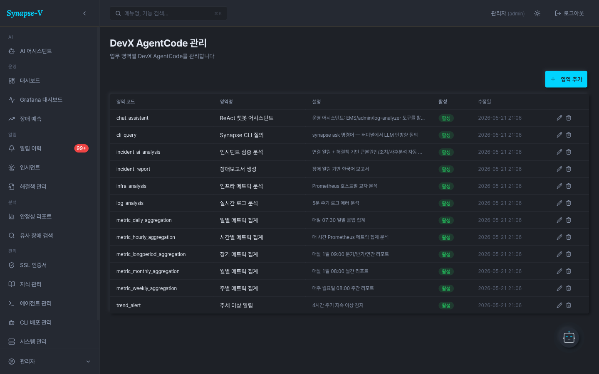
과거 문서에는 “담당자별 LLM API 키로 팀별 비용을 분리 청구한다”는 설명이 있었으나,
현재 구조에서는 담당자 정보에 LLM 키가 없습니다(ADR-007).
대신 llm_agent_configs 테이블에서 업무 영역별로 AgentCode를 관리합니다.
비용 구분은 담당자가 아니라 이 영역 코드 기준입니다.
방화벽 개방 · 워크플로 생성 보안 · 운영
Microsoft가 Teams의 Incoming Webhook 커넥터를 은퇴시키면서 기존 알림 경로가 끊겼습니다. 대체 경로인 워크플로(Power Automate) 웹훅으로 다시 연결합니다. 코드 변경은 없고 주소만 바뀝니다.
*.webhook.office.com→커넥터→Teams 채널(은퇴)*.logic.azure.com→워크플로→Teams 채널6-1. 방화벽 아웃바운드 개방 신청 보안
새 웹훅은 *.logic.azure.com을 사용합니다. 기존에 *.webhook.office.com만 열려 있다면
길이 막혀 있어 뒤 단계가 전부 무의미해집니다.
| 항목 | 값 |
|---|---|
| 출발지 | Server A (admin-api · log-analyzer 컨테이너) |
| 목적지 | *.logic.azure.com |
| 포트 | 443/TCP (HTTPS) |
| 사유 | Teams 채널 알림 발송 (Office 365 커넥터 은퇴에 따른 대체 경로) |
# 개방 후 Server A에서 확인
curl -sv --max-time 5 https://prod-00.koreacentral.logic.azure.com 2>&1 \
| grep -iE "connected|SSL connection"Connected 또는 SSL connection 줄이 보이면 통과입니다.
404 응답이 와도 정상입니다 — 길이 열렸다는 뜻입니다.
6-2. 시작 전 준비
| 항목 | 내용 |
|---|---|
| Teams 권한 | 알림을 받을 팀의 멤버. 팀 정책에 따라 소유자 승인이 필요할 수 있습니다. |
| 생성 계정 | 개인 계정이 아닌 공용 운영 계정으로 만드십시오. 워크플로는 만든 사람 계정에 묶이며, 그 계정이 비활성화되면 알림도 함께 멈춥니다. |
| 채널 개수 | Teams 채널마다 워크플로를 하나씩 만듭니다. 시스템별로 채널이 다르면 채널 수만큼 반복합니다. |
6-3. Teams에서 워크플로 만들기 운영
- 알림을 받을 채널 이름에 마우스를 올리고 오른쪽
⋯→ 워크플로 클릭
메뉴에 없으면 Teams 왼쪽 앱 바⋯→ Workflows 앱을 검색해 실행해도 됩니다. - 템플릿 목록에서 웹후크 요청을 받으면 채널에 게시 선택
영문 환경: Post to a channel when a webhook request is received - 연결 계정을 확인하고 다음 — 준비 단계에서 정한 공용 운영 계정이 맞는지 다시 봅니다.
- 팀과 채널을 고르고 워크플로 만들기
- 완료 화면에 웹훅 주소가 나옵니다. 복사 버튼으로 전체를 복사해 안전한 곳에 붙여 둡니다.
Teams · Power Automate는 Microsoft 클라우드 화면이라 이 문서를 만든 환경에서 접근할 수 없었습니다.
사내에서 위 1~5단계를 진행하며 캡처해 이 자리에 넣으십시오.
주소 모양
https://prod-NN.koreacentral.logic.azure.com:443/workflows/<id>/triggers/manual/paths/invoke
?api-version=2016-06-01&sp=%2Ftriggers%2Fmanual%2Frun&sv=1.0&sig=<서명>&sig=… 가 이 웹훅의 인증 키 전부입니다
일부만 복사하면 401 또는 403이 나고, 원인을 찾기 가장 어려운 실수입니다.
화면을 닫기 전에 ?api-version= 부터 맨 끝까지 들어왔는지 눈으로 확인하십시오.
주소 자체가 곧 비밀번호이므로 채팅·이슈·문서에 그대로 붙여넣지 않습니다.
워크플로 점검 · 발송 테스트 운영
7-1. 워크플로 내부 설정 점검
템플릿 기본값이면 대개 그대로 동작하지만, 카드가 안 뜨는 사고의 1순위 원인이 여기 있으므로 한 번 열어 확인합니다.
make.powerautomate.com접속 → 왼쪽 내 흐름 → 방금 만든 흐름 → 편집- 트리거 HTTP 요청을 받는 경우를 열고, 다음이 흐름을 트리거할 수 있음 항목이 누구나(Anyone) 인지 확인합니다. 이게 아니면 서버에서 호출해도 인증 오류가 납니다.
- 액션 채팅 또는 채널에 카드 게시를 열고 Adaptive Card 입력란이 카드 본문을 가리키는지 확인합니다.
@{triggerOutputs()?['body/attachments'][0]/content}Synapse-V는 카드를 attachments[0].content 안에 담아 보냅니다.
식이 어긋나 있으면 요청은 202로 성공하는데 채널에는 빈 메시지나 알아볼 수 없는 JSON이 올라옵니다.
7-2. 서버에서 발송 테스트
Synapse-V에 등록하기 전에 실제 알림과 같은 형식으로 한 번 쏴 봅니다. 내 PC가 아니라 실제로 알림을 보내는 Server A에서 실행해야 방화벽까지 함께 검증됩니다.
WEBHOOK='<복사한 주소 전체>'
curl -sS -o /dev/null -w '%{http_code}\n' -X POST "$WEBHOOK" \
-H 'Content-Type: application/json' \
-d '{
"type": "message",
"attachments": [{
"contentType": "application/vnd.microsoft.card.adaptive",
"content": {
"$schema": "http://adaptivecards.io/schemas/adaptive-card.json",
"type": "AdaptiveCard",
"version": "1.4",
"body": [
{"type":"TextBlock","text":"Synapse-V 연결 테스트","weight":"Bolder","size":"Medium"},
{"type":"FactSet","facts":[{"title":"상태","value":"웹훅 정상"}]}
]
}
}]
}'| 응답 | 의미 |
|---|---|
202 | 정상. 워크플로가 요청을 접수했습니다. 채널에 카드가 뜨는지 반드시 확인하십시오. |
401 403 | 주소의 sig 값이 잘렸거나 트리거 권한이 “누구나”가 아닙니다. |
400 | 보낸 데이터 구조 오류. 위 JSON을 그대로 복사했는지 확인합니다. |
타임아웃 · 000 | 방화벽이 열리지 않았습니다. 06단계로 돌아갑니다. |
200이 아니라 202
202 Accepted는 “접수했다”는 뜻이라 202가 와도 게시는 실패할 수 있습니다.
반드시 채널을 눈으로 확인하고, 카드가 안 보이면 Power Automate의 28일 실행 기록에서 실패 사유를 봅니다.
Synapse-V에 웹훅 주소 등록 운영
등록 위치는 두 곳이고, 시스템별 설정이 전역 설정보다 우선합니다.
- 해당 시스템의
teams_webhook_url값이 있으면 이 주소로 발송합니다 - 전역
TEAMS_WEBHOOK_URL환경변수시스템별 값이 비어 있을 때 사용합니다 - 발송 생략둘 다 없으면
Teams Webhook URL 미설정 — 알림 생략로그만 남습니다
8-1. 시스템별 등록 (권장 · 재기동 불필요)
- 사이드바 관리 > 시스템 관리 (
/systems) - 해당 시스템의 수정 → Teams Webhook URL 칸에 붙여넣기
- 수정 버튼으로 저장 — 즉시 반영되며 컨테이너 재기동이 필요 없습니다.
시스템마다 다른 채널로 알림을 보내려면 이 방식만 사용합니다. 등록 화면은 11단계에 캡처가 있습니다.
8-2. 전역 폴백 등록
# /app/synapse/.env
TEAMS_WEBHOOK_URL=https://prod-NN.koreacentral.logic.azure.com:443/workflows/...cd /app/synapse
docker compose up -d admin-api log-analyzer환경변수로 주입되므로 .env 수정만으로는 반영되지 않습니다.
admin-api와 log-analyzer를 함께 다시 올리십시오 — 두 서비스 모두 Teams로 발송합니다.
8-3. 실제 알림으로 마무리 검증
docker logs -f --tail 100 synapse-admin-api | grep -i teams
docker logs -f --tail 100 synapse-log-analyzer | grep -i teams| 로그 | 판정 |
|---|---|
| 아무 경고 없음 | 정상 발송 |
Teams webhook responded 4xx | 주소 또는 워크플로 문제 — 06·07단계 재확인 |
Teams 비동기 발송 실패 (무시) | 연결 실패 또는 응답 지연 — 방화벽 확인 |
Teams Webhook URL 미설정 — 알림 생략 | 시스템에도 전역에도 주소가 없음 |
no_webhook이 뜻하는 것
알림 수신 API(POST /api/v1/alerts/receive)는 발송 결과를
{"alertname":"…","status":"sent"} 또는 "no_webhook"으로 돌려줍니다.
no_webhook은 “주소가 없음”과 “주소는 있으나 발송 실패”를 구분하지 않습니다.
어느 쪽인지는 위 로그로 판단하십시오. 단, 이 값과 무관하게 알림 이력은 정상 저장되므로
화면의 알림 이력에는 그대로 남습니다.
전환 후 달라지는 것
| 항목 | 구 커넥터 | 워크플로 |
|---|---|---|
| 게시자 표시 | 커넥터 이름 | Flow bot으로 표시됩니다. 채널 구성원에게 미리 알려 두십시오. |
| 성공 응답 | 200 | 202 Accepted (코드에서 이미 성공 처리) |
| 버튼 링크 | 정상 | 정상 — “인시던트 보기” 버튼 동작 |
| @멘션 | 정상 | 검증 필요. Flow bot 게시에서는 이름만 평문으로 보일 수 있습니다. 07-2 테스트에 멘션 포함 카드를 한 번 섞어 확인하십시오. |
| 소유권 | 채널에 귀속 | 만든 사람 계정에 귀속 — 인사이동 시 인계 대상 |
| 장기 유휴 | 없음 | 오래 실행되지 않은 흐름은 중지될 수 있습니다. 분기 1회 상태 점검을 권장합니다. |
계정 가입 및 승인
여기서부터는 새 서비스를 모니터링에 붙이는 담당자가 화면에서 진행하는 절차입니다.
전체 흐름
| 단계 | 사이드바 메뉴 | 화면 경로 |
|---|---|---|
| ⑨ 계정 가입 | 로그인 화면 → 사용자 신청 | /register |
| ⑨ 계정 승인 | 내 프로필 > 사용자 관리 admin | /admin/users |
| ⑩ 담당자 등록 | 관리 > 담당자 관리 | /contacts |
| ⑪ 시스템 등록 | 관리 > 시스템 관리 | /systems |
| ⑫ 서버 IP · 담당자 연결 | 관리 > 시스템 관리 → 수정 화면 안의 패널 | /systems |
| ⑬ 에이전트 설치 | 관리 > 에이전트 관리 | /agents |
| ⑭ 모니터링 확인 | 운영 > 대시보드 · 알림 > 알림 이력 · 인시던트 | /dashboard, /alerts, /incidents |
9-1. 사용자 신청
Synapse-V 화면(포트 3001)에 접속해 로그인 화면 아래 사용자 신청을 누릅니다.
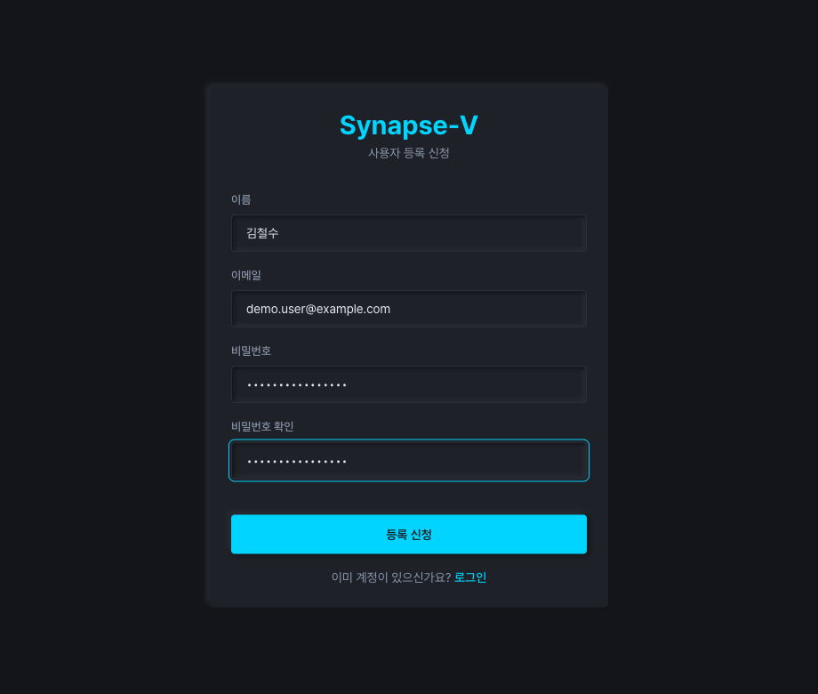
/register) — 이름 / 이메일 / 비밀번호를 입력합니다.12자 이상이면서 영문 대문자 1개 이상, 숫자 1개 이상을 포함해야 합니다. 세 조건 중 하나라도 빠지면 입력칸 아래에 빨간 글씨로 사유가 나옵니다.
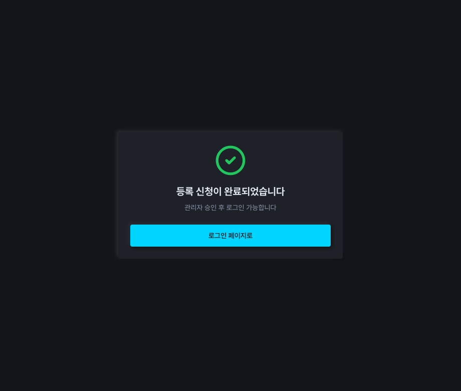
9-2. 승인 전에는 로그인되지 않습니다
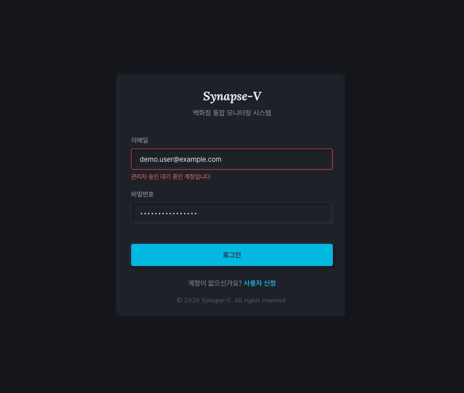
관리자 승인 대기 중인 계정입니다 메시지가 뜹니다.
비밀번호를 잘못 입력한 것이 아니므로 다시 시도하지 말고 관리자에게 승인을 요청하십시오.9-3. 관리자 승인 admin 전용
관리자는 사이드바 내 프로필 > 사용자 관리(/admin/users)에서 승인합니다.
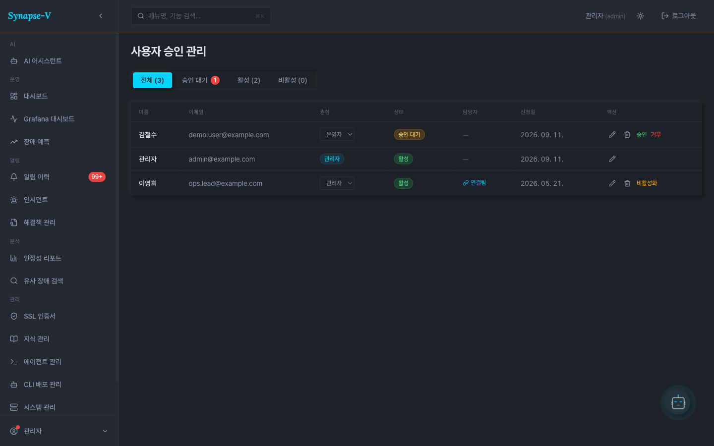
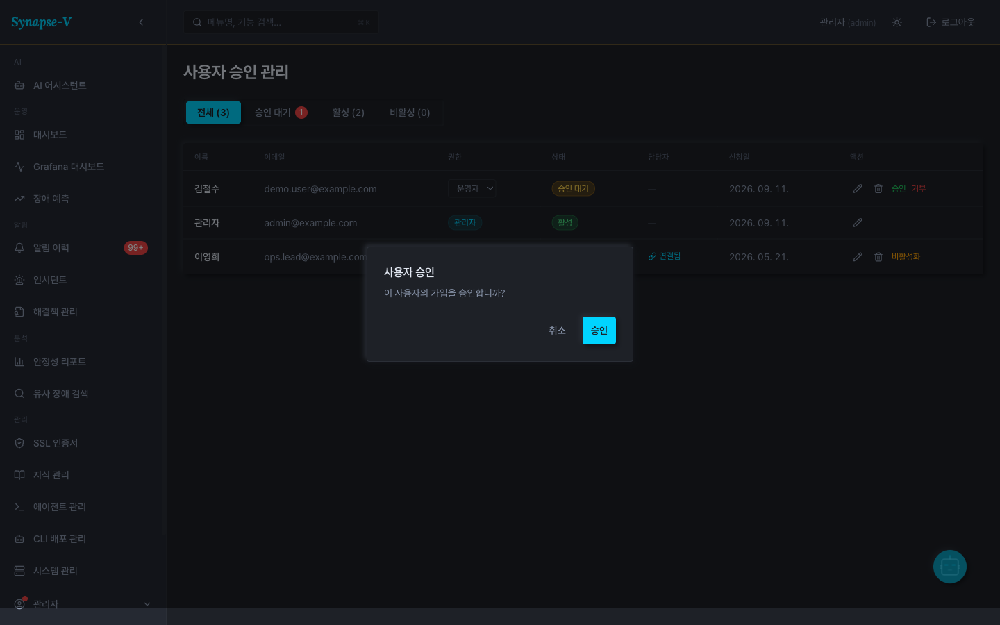
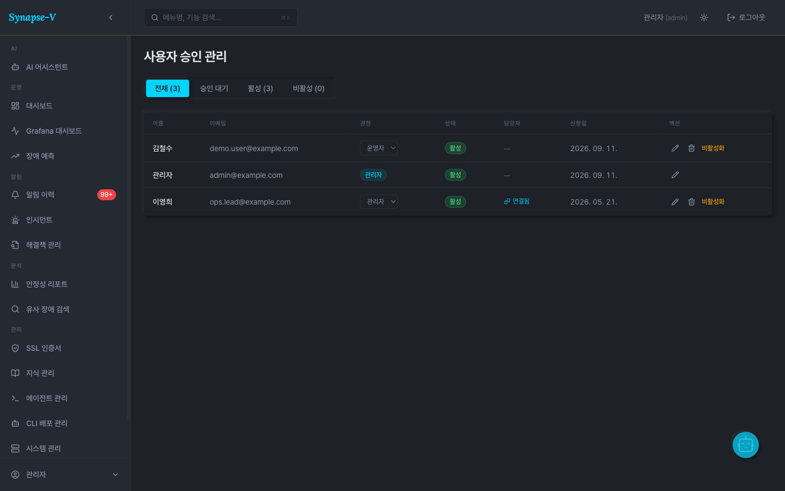
operator(운영자) — 시스템·담당자·에이전트 등록 등 온보딩 작업 전부 가능.
admin(관리자) — 위 전부 + 사용자 승인, LLM 설정, 챗봇 도구 관리, OAuth 클라이언트 관리.
신규 온보딩 담당자에게는 operator면 충분합니다.
담당자 등록 관리 > 담당자 관리
시스템에 연결할 담당자를 먼저 등록합니다. 담당자는 장애 알림 Teams 카드에서 @mention 되는 대상입니다.
담당자 정보는 이름·이메일을 직접 입력하는 방식이 아니라 사용자 계정을 가리키는 구조로 바뀌었습니다
(DB상 contacts.user_id가 users를 참조).
따라서 09단계의 가입·승인이 먼저 끝나 있어야 목록에 나타납니다.
이름이나 이메일을 바꾸려면 사용자 관리 화면에서 바꾸면 담당자 정보도 함께 반영됩니다.
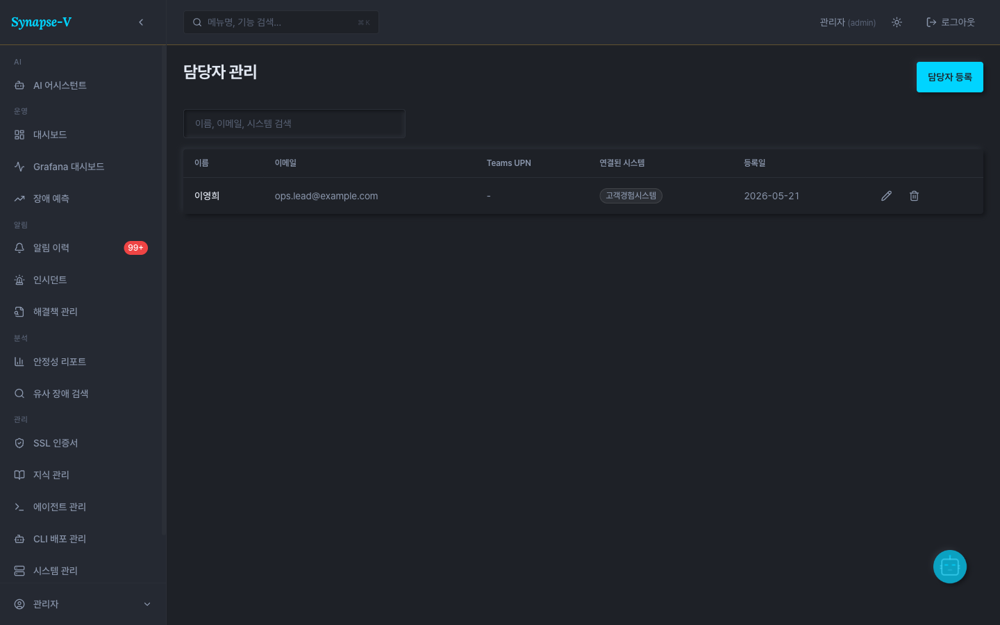
/contacts) — 오른쪽 위 담당자 등록 버튼으로 추가합니다.
연결된 시스템 열에서 이 담당자가 어느 시스템을 맡고 있는지 한눈에 볼 수 있습니다.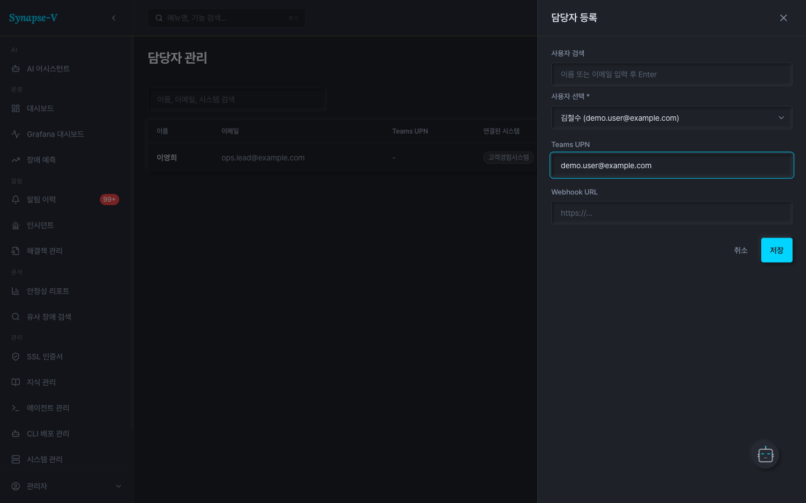
입력 항목
| 항목 | 필수 | 설명 |
|---|---|---|
| 사용자 검색 | 목록이 길 때 이름·이메일로 걸러 냅니다. | |
| 사용자 선택 | 필수 | 09단계에서 가입·승인된 계정을 고릅니다. 이미 담당자로 등록된 사용자는 — 이미 등록됨으로 표시되고 선택되지 않습니다. |
| Teams UPN | 권장 | Teams에서 @mention에 쓰는 계정 주소입니다. UPN(User Principal Name, 사용자 계정 이름)은 보통 회사 메일 주소와 같은 형태입니다. 비워 두면 알림 카드에 멘션이 걸리지 않습니다. |
| Webhook URL | 선택 | 이 담당자에게만 따로 보낼 채널이 있을 때 입력합니다. 대부분 비워 둡니다. |
시스템 등록 관리 > 시스템 관리
모니터링 대상이 될 서비스를 “시스템” 단위로 등록합니다. 이 단계가 온보딩에서 가장 중요합니다.
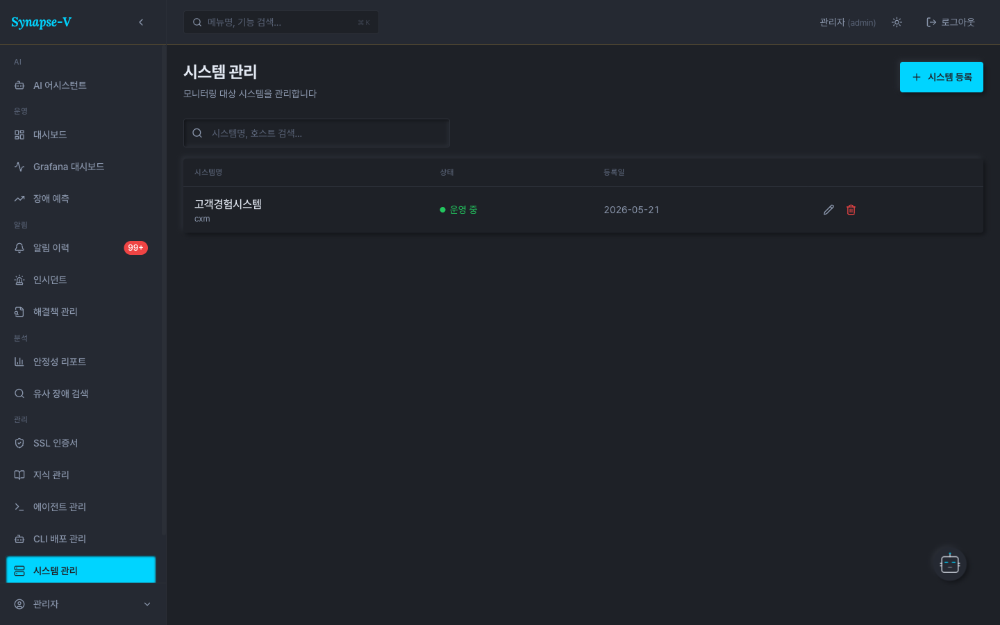
/systems) — 오른쪽 위 시스템 등록 버튼을 누릅니다.
목록에는 표시 이름(굵게)과 시스템 ID(아래 작은 글씨)가 함께 나옵니다.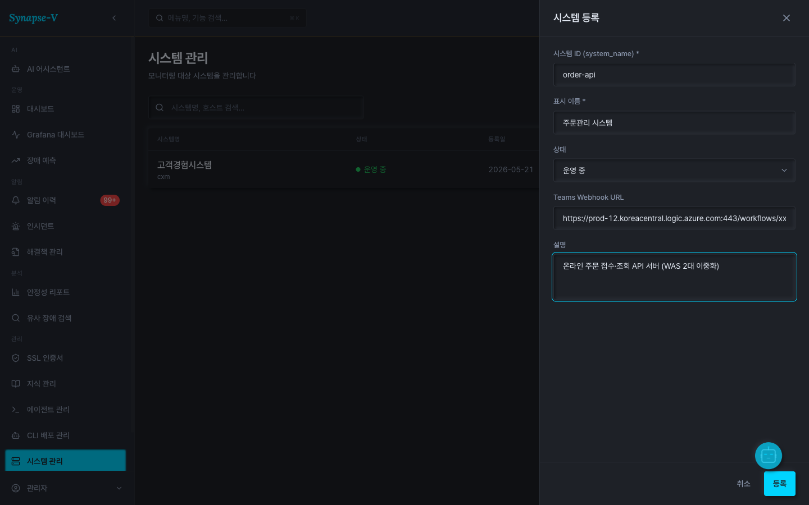
order-api(주문관리 시스템)를 등록하는 화면입니다.입력 항목
| 필드 | 필수 | 설명 |
|---|---|---|
시스템 ID (system_name) | 필수 | 영문 소문자 식별자 (예: order-api). 등록 후에는 수정할 수 없습니다 — 수정 화면에서 이 칸은 회색으로 잠깁니다. |
| 표시 이름 | 필수 | 화면과 알림에 나오는 이름 (예: 주문관리 시스템). 이것은 나중에 바꿀 수 있습니다. |
| 상태 | 운영 중 / 비활성 | |
| Teams Webhook URL | 선택 | 이 시스템 전용 알림 채널. 비워 두면 전역 TEAMS_WEBHOOK_URL로 넘어갑니다. (08단계 참고) |
| 설명 | 선택 | 서비스에 대한 간단한 설명 |
system_name 규칙 — 가장 중요
system_name은 수집기가 Prometheus 메트릭에 붙이는 system_name 라벨과 일치해야 합니다.
불일치하면 메트릭과 알림은 정상 수신되는데 담당자 조회에 실패해 Teams 알림만 조용히 발송되지 않습니다.
가장 찾기 어려운 증상입니다.
에이전트 등록 화면에서 시스템을 목록에서 골라 등록하면 라벨이 자동으로 맞춰집니다. 그래서 반드시 시스템 등록(11단계) → 에이전트 등록(13단계) 순서를 지키십시오. 반대로 하면 라벨을 손으로 맞춰야 합니다.
시스템을 몇 개로 나눌 것인가
| 상황 | 권장 |
|---|---|
| 서비스마다 Teams 채널 · 담당자를 분리하고 싶다 | 서비스마다 별도 system_name으로 등록 |
| 같은 팀이 서버 한 대에서 로그 파일만 여러 개 본다 | 시스템 1개로 두고, 에이전트에 로그 소스를 여러 개 정의 (13단계) |
| WAS가 2대로 이중화되어 있다 | 시스템 1개 + 서버 IP 2개 + 에이전트마다 instance_role을 다르게 (was1/was2) |
서버 IP · 담당자 연결
시스템을 등록하면 같은 화면이 시스템 수정으로 바뀌면서 아래쪽에 서버 IP와 담당자 두 개의 패널이 나타납니다. 여기서 이어 붙입니다.
12-1. 서버 IP 추가
IP 추가 버튼을 누르면 오른쪽에 작은 입력창이 하나 더 열립니다.
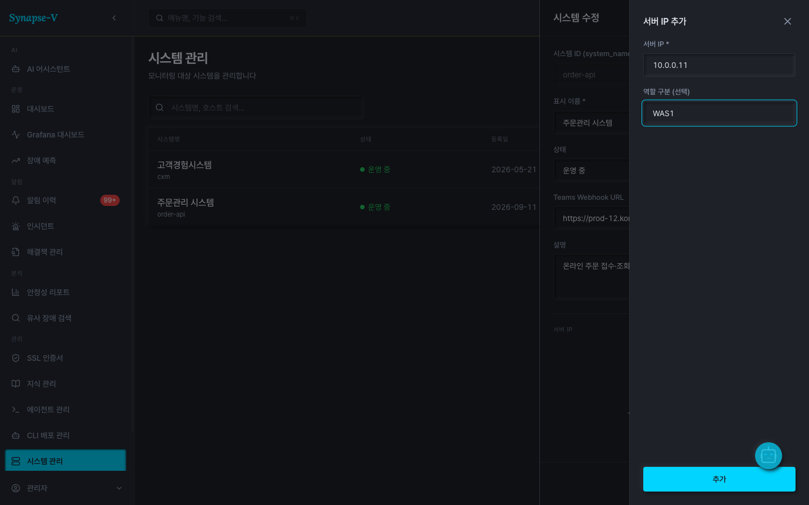
WAS1, DB1처럼 이 서버가 무슨 용도인지 알아보기 위한 이름표입니다.서버가 여러 대라면(WAS 이중화, DB Primary/Standby 등) IP를 각각 추가합니다. WAS는 Web Application Server(웹 애플리케이션 서버)의 줄임말입니다.
12-2. 담당자 연결
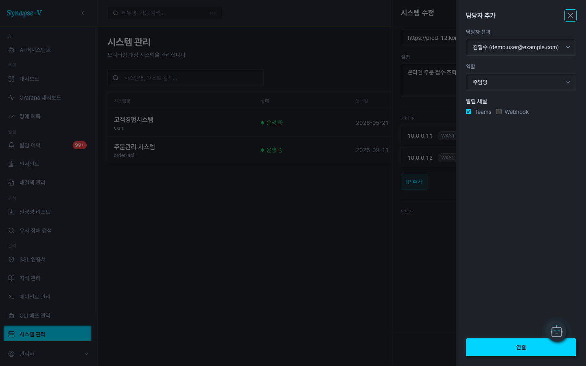
| 항목 | 선택지 | 설명 |
|---|---|---|
| 담당자 선택 | 등록된 담당자 목록 | 10단계에서 등록해 둔 사람만 나옵니다. |
| 역할 | 주담당 / 부담당 / 에스컬레이션 | 에스컬레이션은 1차 대응이 지연될 때 알릴 상위 담당자입니다. |
| 알림 채널 | Teams / Webhook | 기본값은 Teams입니다. Webhook은 담당자에게 개별 Webhook URL이 등록된 경우에만 의미가 있습니다. |
시스템과 담당자는 N:M 관계입니다. 한 시스템에 여러 담당자를, 한 담당자가 여러 시스템을 맡을 수 있습니다. 연결된 담당자 전원이 장애 알림 Teams 카드의 @mention 대상이 됩니다.
12-3. 완료 확인
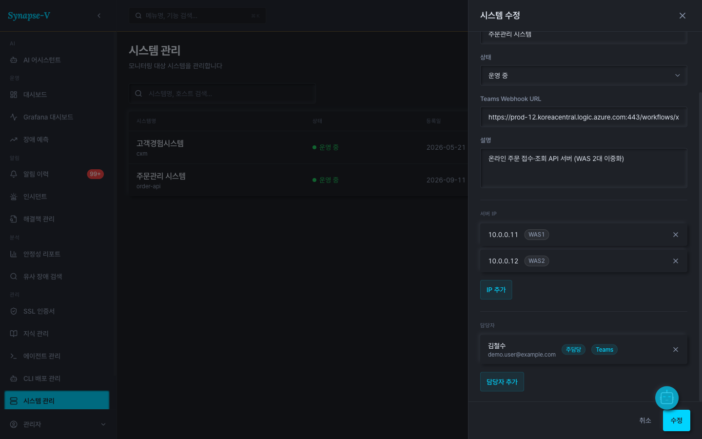
10.0.0.11 WAS1, 10.0.0.12 WAS2)와
담당자 1명(주담당 · Teams)이 붙은 상태입니다. 마지막으로 아래 수정 버튼을 눌러 저장합니다.서버 IP와 담당자는 추가하는 즉시 반영되지만, 위쪽의 표시 이름 · Teams Webhook URL · 설명은 아래 수정 버튼을 눌러야 저장됩니다.
에이전트 설치 관리 > 에이전트 관리
대상 서버에 수집기를 설치합니다. 서버에 직접 접속할 필요 없이 화면에서 SSH로 원격 설치합니다.
13-1. 사전 요건 (대상 서버)
- Server A에서 대상 서버로 SSH 접속이 가능할 것 (계정 / 비밀번호)
- 대상 서버에서 Server A의 Prometheus로 Remote Write가 가능할 것 — 방화벽 개방 필요
- RedHat 계열 리눅스 x86_64 — 수집기는 musl 정적 바이너리라 별도 런타임 설치가 필요 없습니다
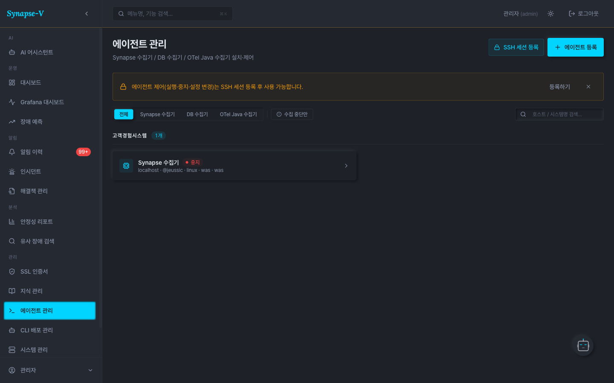
/agents) — 시스템별로 묶여 표시됩니다.
위쪽 노란 띠는 “SSH 세션을 먼저 등록해야 제어할 수 있다”는 안내입니다.13-2. SSH 세션 등록 (먼저)
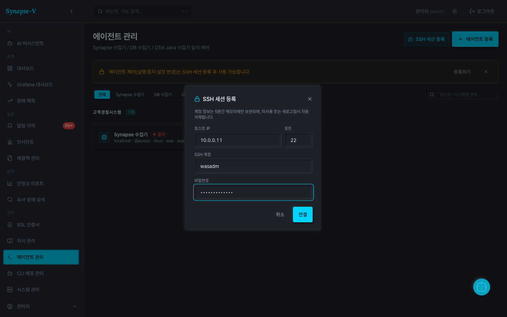
입력한 계정 정보는 5분간 메모리에만 보관되며, 사용하지 않거나 화면을 새로고침하면 자동으로 지워집니다.
DB에는 계정명(ssh_username)만 남습니다.
5분이 지나 제어가 막히면 SSH 세션을 다시 등록하면 됩니다.
13-3. 에이전트 등록
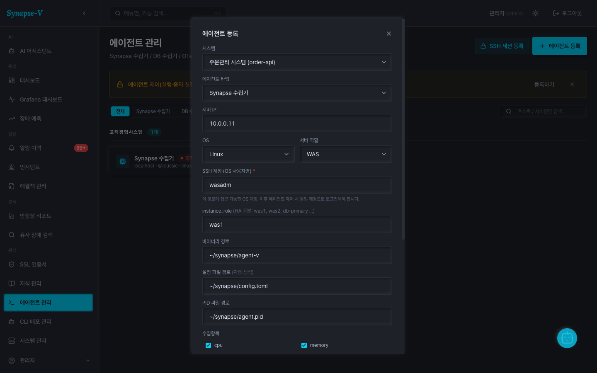
instance_role, 각종 경로를 지정합니다.| 항목 | 설명 |
|---|---|
| 시스템 | 11단계에서 등록한 시스템을 고릅니다. 여기서 system_name 라벨이 자동으로 결정됩니다. |
| 에이전트 타입 | 아래 표 참고 |
| 서버 IP | 12단계에서 연결한 서버 IP |
| OS / 서버 역할 | Linux · Windows / Web · WAS · DB · Middleware · 기타 |
| SSH 계정 | 설치·실행에 쓸 OS 계정 (예: wasadm). 이후 에이전트를 제어할 때도 같은 계정으로 로그인해야 합니다. |
| instance_role | 아래 주의 참고 |
| 바이너리 / 설정 / PID 파일 경로 | 기본값(~/synapse/…)을 그대로 쓰면 됩니다. 설정 파일은 자동 생성됩니다. PID(Process ID)는 실행 중인 프로세스 번호를 적어 두는 파일입니다. |
instance_role은 “에이전트 타입”이 아니라 “HA 인스턴스 식별자”입니다
HA(High Availability, 고가용성)로 서버를 여러 대 운영할 때 서로 구분하기 위한 이름입니다.
WAS 이중화면 was1 / was2, DB 이중화면 db-primary / db-standby처럼
대상 서버마다 다르게 넣습니다. 서버가 한 대뿐이면 비워 두면 default가 됩니다.
같은 값을 두 대에 넣으면 메트릭이 섞여 어느 서버 문제인지 구분되지 않습니다.
에이전트 타입
| 타입 | 용도 |
|---|---|
Synapse 수집기 (synapse_agent) | 서버 메트릭 + 로그 에러 수집 (Rust 단일 바이너리). 대부분 이것입니다. |
DB 수집기 (db) | Oracle · PostgreSQL 등 데이터베이스 메트릭 수집 |
OTel Java 수집기 (otel_javaagent) | JVM(Java Virtual Machine, 자바 가상 머신)·WAS 추적(트레이싱). OTel은 OpenTelemetry(관측 데이터 수집 표준)의 줄임말이며 Tempo와 연동됩니다. |
13-4. 수집 항목과 로그 설정
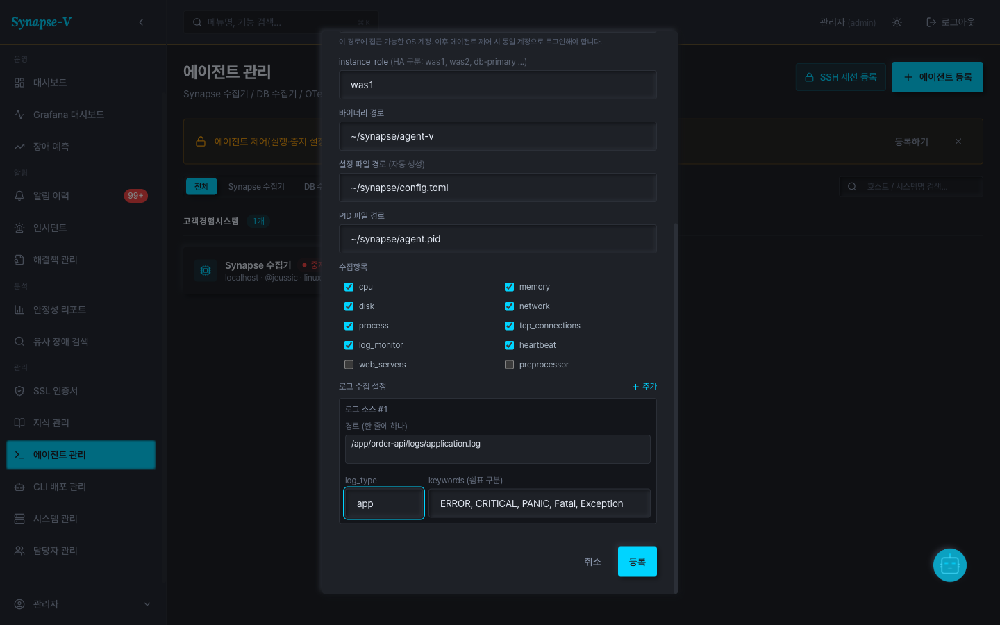
| 수집 항목 | 기본값 | 설명 |
|---|---|---|
cpu memory disk network | 켜짐 | 기본 서버 자원 사용률 |
process tcp_connections | 켜짐 | 프로세스 상태(좀비 프로세스 포함), 네트워크 연결 수 |
log_monitor | 켜짐 | 로그 파일 감시 — 아래 로그 수집 설정과 함께 씁니다 |
heartbeat | 켜짐 | 수집기 생존 신호. 꺼 두면 에이전트 상태가 화면에 표시되지 않습니다. |
web_servers | 꺼짐 | Apache·Nginx 응답시간 수집. 웹 서버가 있을 때만 켜고 아래 “웹 서버 설정”을 추가합니다. |
preprocessor | 꺼짐 | 전송 전 로그 전처리 |
로그 수집 설정
| 항목 | 설명 |
|---|---|
| 경로 | 한 줄에 하나씩 입력합니다. glob(*로 여러 파일을 한 번에 지정하는 표기법)을 지원하므로 날짜가 붙는 로그도 /app/logs/app-*.log 형태로 잡을 수 있습니다. |
| log_type | 로그 소스를 구분하는 이름표 (예: jeus, app, batch). 알림과 분석 결과에 이 값이 함께 표시됩니다. |
| keywords | 에러로 판단할 키워드를 쉼표로 구분 (기본: ERROR, CRITICAL, PANIC, Fatal, Exception) |
추가 버튼으로 로그 소스를 여러 개 만들면 설정 파일에 다중 항목으로 배포됩니다.
애플리케이션 로그와 배치 로그를 log_type으로 나눠 두면 나중에 분석 결과를 구분해 보기 좋습니다.
13-5. 설치 실행
등록을 누르면 admin-api가 설정 파일을 SFTP(SSH File Transfer Protocol, SSH 기반 파일 전송)로 올리고
바이너리를 실행합니다. 진행 상태는 대기 → 실행 중 → 완료 / 실패로 화면에서 확인할 수 있습니다.
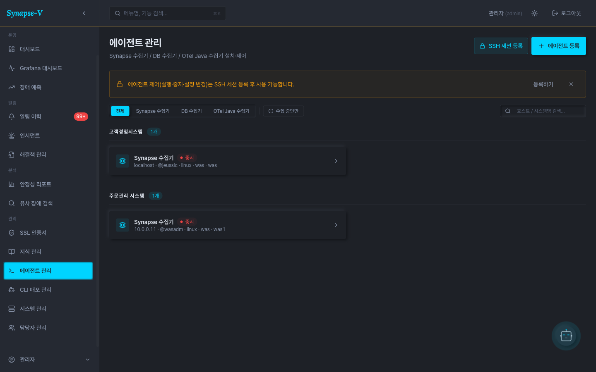
주문관리 시스템 아래에 에이전트가 생겼습니다.
10.0.0.11 · @wasadm · linux · was · was1처럼 서버 IP · SSH 계정 · OS · 역할 · instance_role이 한 줄로 보입니다.
이 캡처는 실제 SSH 접속이 없는 테스트 환경이라 상태가 중지로 표시됩니다.
실제 설치가 성공하면 실행 중이 됩니다.13-6. 수집 동작 (참고)
- 수집기는 로그를 키워드로 걸러 낸 뒤 PII(Personally Identifiable Information, 개인식별정보) 마스킹을 거쳐
log_error_total메트릭으로 Prometheus에 보냅니다.
라벨:system_name,instance_role,host,log_type,level,service_name,template - 네트워크가 끊겨도 WAL(Write-Ahead Log, 선기록 로그) 버퍼에 2시간 치를 쌓아 두었다가 복구되면 다시 보냅니다
(
/var/lib/synapse-agent/wal).
모니터링 동작 확인
설치가 끝나면 네 곳을 순서대로 확인합니다. 여기까지 통과하면 온보딩 완료입니다.
14-1. 에이전트 상태
관리 > 에이전트 관리(/agents)에서 방금 등록한 수집기가 실행 중인지 봅니다.
heartbeat 수집 항목이 켜져 있어야 상태가 갱신됩니다.
14-2. 대시보드
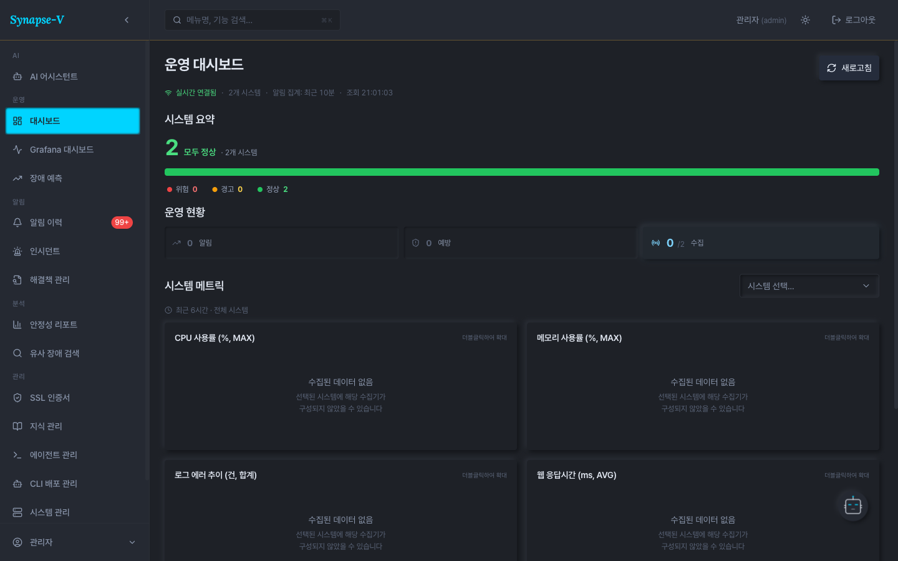
/dashboard) —
이 캡처는 에이전트 등록 직후, 메트릭이 아직 도착하기 전 상태입니다.
그래서 그래프에 수집된 데이터 없음이 뜹니다.
정상적으로 수집이 시작되면 시스템 요약의 개수가 늘고 CPU·메모리·로그 에러·웹 응답시간 그래프에 선이 그려집니다.수집기가 첫 메트릭을 보내고 Prometheus가 저장할 때까지 보통 1~2분 걸립니다.
5분이 지나도 수집된 데이터 없음이라면 대상 서버 → Server A Prometheus 방화벽(Remote Write)을 먼저 의심하십시오.
14-3. 알림 이력
log-analyzer가 5분 주기(ANALYSIS_INTERVAL_SECONDS=300)로 log_error_total을 조회해 LLM 분석을 수행합니다.
대상 서버 로그에 테스트 에러를 한 줄 발생시킨 뒤 확인합니다.
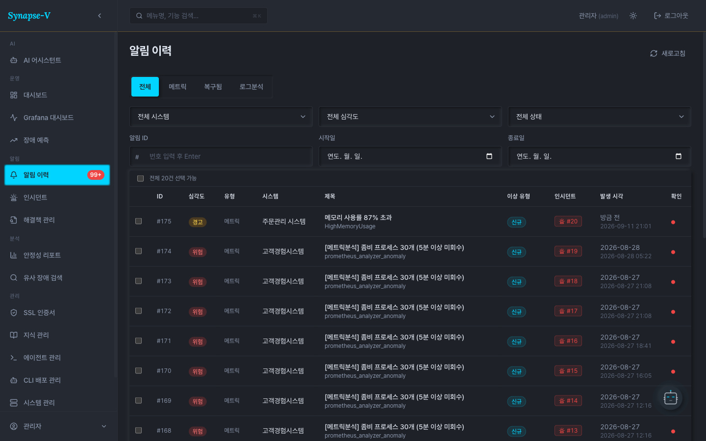
/alerts) — 맨 위 #175가 주문관리 시스템에서 방금 발생한 알림입니다.
유형(메트릭 / 로그분석), 심각도, 이상 유형(신규 / 유사 사례 있음), 연결된 인시던트 번호가 함께 보입니다.
위 탭으로 유형별로 걸러 볼 수 있습니다.14-4. 인시던트
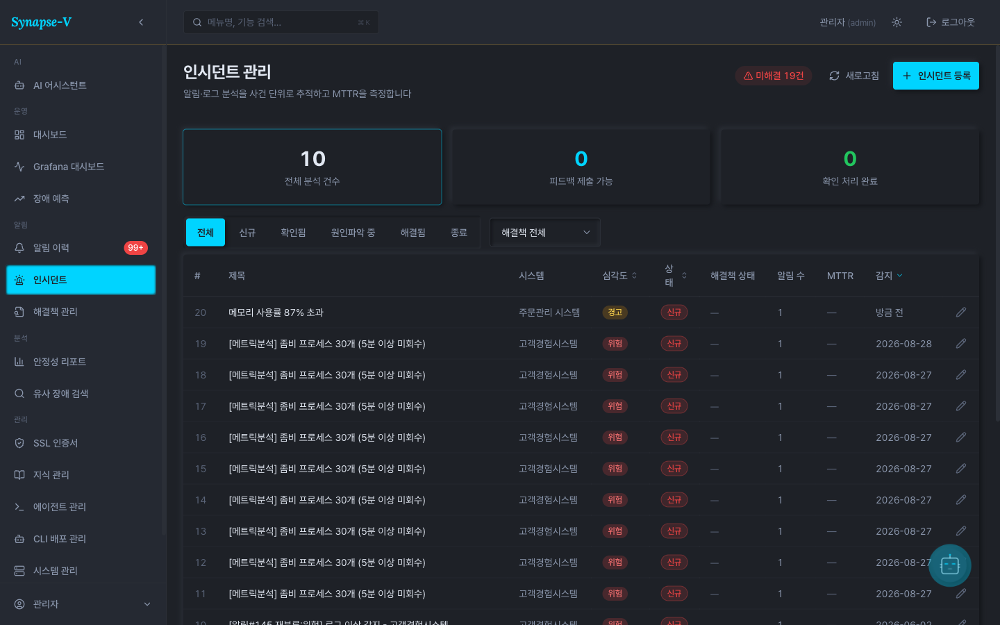
/incidents) — 알림이 들어오면 사건 단위로 인시던트가 자동 생성됩니다.
위 알림 #175가 인시던트 #20으로 만들어진 것을 볼 수 있습니다.
MTTR(Mean Time To Repair, 평균 복구 시간)은 인시던트를 종료 처리해야 계산됩니다.알림 발생 → 알림 이력 적재 → 인시던트 자동 생성이 이어지면 수집·분석 경로는 살아 있는 것입니다. 남은 것은 Teams 카드가 채널에 실제로 도착하는지와 담당자 @mention이 걸리는지입니다 — 08단계의 로그 확인으로 판단합니다.
14-5. 최종 점검표
| 확인 항목 | 화면 | 정상 모습 |
|---|---|---|
| 에이전트 살아 있음 | /agents | 실행 중 |
| 메트릭 수집됨 | /dashboard | 그래프에 선이 그려짐 |
| 알림 적재됨 | /alerts | 해당 시스템 이름으로 알림 행 생성 |
| 인시던트 생성됨 | /incidents | 알림과 연결된 인시던트 번호 존재 |
| Teams 카드 도착 | Teams 채널 | Adaptive Card + 담당자 @mention |
증상별 조치 (전체)
설치 단계
| 증상 | 원인 | 조치 |
|---|---|---|
| admin-api 기동 실패 (DB 연결 오류) | DB_USER가 synapse가 아님 | .env에서 DB_USER=synapse 확인 후 docker compose up -d admin-api |
타시스템 SSO 로그인 시 ValueError: OAUTH_PRIVATE_KEY … | RSA 키 없이 이미지를 빌드함 — 기동 자체는 정상이라 설치 때는 드러나지 않습니다 | secrets/에서 키 생성 후 이미지 재빌드 (01-2) |
/.well-known/jwks.json 이 {"keys": []} 반환 | 위와 같은 원인 | 동일 — 01-2 |
컨테이너가 exec format error 로 기동 실패 | Apple Silicon Mac에서 --platform 없이 받아 arm64 이미지가 반입됨 | 빌드 장비에서 해당 이미지 docker rmi 후 --platform linux/amd64로 다시 받아 재반입 (01-5) |
| log-analyzer 기동 실패 (모델 없음) | 임베딩 모델 볼륨 미배포 | synapse-models.tar.gz를 /app/synapse/models/에 압축 해제 (04-2) |
export-models 가 We couldn't connect to huggingface.co 로 실패 | 사내망에서 HuggingFace 차단 | 외부 PC에서 받아 반입 — 01-4 방법 C |
모델 파일은 있는데 로딩 실패 (onnxruntime 오류) | USB·Windows 경유로 심볼릭 링크가 깨짐, 또는 model.onnx_data 누락 | 디렉터리 복사 대신 tar -czhf로 만든 압축 파일을 반입 (01-4) |
Reranker 사전 로드 실패 / Reranker 추론 실패 … 원본 순서 유지 | 모델 볼륨에 model_int8.onnx 없음 — 이 변경 이전에 배포된 서버이거나 모델 반입 누락 | export-models를 다시 뽑아 모델 볼륨 재배포 (01-4). 장애 없이 검색 품질만 떨어지므로 로그로만 확인됩니다. |
Permission denied (prometheus / postgres) | 바인드 마운트 디렉터리 소유권 불일치 | chown -R 1036:510 /app/synapse/services/ |
| Prometheus 인증 오류 (401) | bcrypt 해시 미입력 또는 오류 | 해시 재생성 후 configs/prometheus/web.yml 갱신 (03-3) |
| Qdrant 컬렉션 없음 | 집계 컬렉션 초기화 미실행 | curl -X POST http://localhost:8000/aggregation/collections/setup |
| log-analyzer 임베딩 오류 | Server B Qdrant 미기동 | Server B에서 docker compose ps 및 /readyz 확인 |
cp .env.example .env가 실패 | 해당 파일이 저장소에서 삭제됨 | .env를 새로 작성 (03-1) |
| log-analyzer가 기동 중 멈춤 (폐쇄망) | HuggingFace Hub 접속 시도 후 타임아웃 | HF_HUB_OFFLINE=1 설정 확인 |
Teams 알림
| 증상 | 원인 | 조치 |
|---|---|---|
| 연결 실패 · 타임아웃 | 방화벽 미개방 | *.logic.azure.com:443 개방 신청 (06-1) |
401 / 403 | sig 값 누락, 트리거 권한 | 주소 전체 재복사, 트리거를 “누구나”로 (06·07) |
202인데 채널 무반응 | 흐름 실행 단계에서 실패 | Power Automate → 해당 흐름 → 실행 기록에서 실패 액션 확인 |
| 빈 메시지 · 알 수 없는 JSON이 올라옴 | Adaptive Card 매핑 어긋남 | attachments[0]/content 식으로 수정 (07-1) |
| 알림이 엉뚱한 채널로 감 | 시스템별 URL이 비어 전역으로 넘어감 | 시스템 수정 화면에서 시스템별 URL 확인 (08-1) |
| 일부만 오고 일부는 누락 | 발송 동시성 상한 또는 응답 지연 | TEAMS_SEND_CONCURRENCY(기본 5) 상향 검토. admin-api 발송 타임아웃은 1초로 짧습니다. |
| 어느 날 갑자기 전부 중단 | 워크플로 생성 계정 비활성 또는 흐름 중지 | Power Automate에서 흐름 상태 확인 후 켜기. 공용 계정으로 재생성 권장 |
온보딩 · 수집
| 증상 | 원인 / 조치 |
|---|---|
| 메트릭은 수집되는데 Teams 알림이 안 옴 | system_name 불일치가 1순위입니다. DB의 systems.system_name과 에이전트가 붙이는 라벨이 같은지 확인하십시오. 시스템에 담당자가 연결되어 있는지도 함께 봅니다 (12단계). |
| 담당자 목록에 사람이 안 나옴 | 해당 사용자가 아직 가입하지 않았거나 관리자 승인 전입니다 (09단계). 이미 담당자로 등록된 사용자는 중복 선택되지 않습니다. |
| 이중화 서버가 구분되지 않음 | instance_role을 서버마다 다르게 지정하십시오 (was1/was2). 에이전트 타입이 아니라 HA 인스턴스 식별자입니다. |
| 에이전트 설치 실패 | SSH 세션 계정과 에이전트 등록 시 SSH 계정이 같은지, 대상 서버 → Server A Prometheus 방화벽이 열려 있는지 확인합니다. 설치 이력에서 실패 사유를 볼 수 있습니다. |
| 에이전트 제어 버튼이 눌리지 않음 | SSH 세션이 만료(5분)된 것입니다. SSH 세션을 다시 등록하십시오. |
| 서비스별로 알림 채널을 나누고 싶음 | 서비스마다 별도 system_name으로 시스템을 분리 등록하고, 각 시스템에 다른 Teams Webhook URL을 넣습니다. |
| 시스템 ID를 잘못 입력함 | 등록 후에는 수정할 수 없습니다. 시스템을 삭제하고 다시 등록해야 합니다 — 에이전트를 붙이기 전에 확인하십시오. |
환경변수 수정 후 적용
cd /app/synapse
# 해당 컨테이너만 재생성 (환경변수 반영)
docker compose up -d admin-api log-analyzer
# 단순 재시작 (환경변수는 반영되지 않음)
docker compose restart admin-api log-analyzer frontend용어집 — 줄임말 풀이
본문에 나오는 줄임말을 모두 모았습니다. 본문에서도 처음 나올 때 한 번씩 풀어 썼습니다.
인증 · 보안
| 줄임말 | 원말 | 이 문서에서의 의미 |
|---|---|---|
| OIDC | OpenID Connect | OAuth 2.0 위에 얹은 인증 표준. Synapse-V가 다른 사내 시스템에 로그인을 제공할 때 씁니다. |
| SSO | Single Sign-On | 한 번 로그인하면 여러 시스템을 다시 로그인 없이 쓰는 방식 |
| IdP | Identity Provider | 인증을 책임지는 쪽. 여기서는 Synapse-V가 그 역할을 합니다. |
| JWT | JSON Web Token | 로그인 상태를 담아 주고받는 토큰 형식. SECRET_KEY로 서명합니다. |
| RSA | Rivest–Shamir–Adleman | 공개키 암호 방식. OIDC 토큰 서명에 쓰는 키 쌍을 만듭니다. |
| bcrypt | — | 비밀번호 전용 단방향 암호화 방식. Prometheus 기본 인증 비밀번호에 사용합니다. |
| Fernet | — | 대칭키 암호화 방식. DB 접속 정보 등을 암호화해 저장할 때 씁니다. |
| PAT | Personal Access Token | 비밀번호 대신 쓰는 개인 발급 토큰. Jira·Confluence 연동에 사용합니다. |
| PII | Personally Identifiable Information | 개인식별정보. 수집기가 로그를 보내기 전에 가립니다(마스킹). |
| DRM | Digital Rights Management | 사내 문서 암호화·권한 관리 솔루션 |
| CORS | Cross-Origin Resource Sharing | 다른 주소의 화면에서 API를 부를 수 있게 허용하는 규칙 |
인프라 · 서버
| 줄임말 | 원말 | 이 문서에서의 의미 |
|---|---|---|
| WAS | Web Application Server | 웹 애플리케이션 서버 (JEUS, WebLogic, Tomcat 등) |
| HA | High Availability | 고가용성. 서버를 여러 대로 이중화해 한쪽이 죽어도 서비스가 유지되는 구성 |
| SCP | Secure CoPy | SSH를 통한 파일 복사 명령 |
| SFTP | SSH File Transfer Protocol | SSH 기반 파일 전송. 에이전트 설정 파일을 올릴 때 씁니다. |
| UID / GID | User ID / Group ID | 리눅스 사용자·그룹 번호. 컨테이너는 1036:510으로 실행됩니다. |
| PID | Process ID | 실행 중인 프로세스 번호. 에이전트가 자기 번호를 파일에 적어 둡니다. |
| musl | — | 가벼운 C 표준 라이브러리. 이걸로 빌드하면 대상 서버에 별도 런타임 설치 없이 실행됩니다. |
| glob | — | * 같은 기호로 여러 파일을 한 번에 지정하는 표기법 (예: app-*.log) |
모니터링 · 데이터
| 줄임말 | 원말 | 이 문서에서의 의미 |
|---|---|---|
| TSDB | Time Series DataBase | 시계열 데이터베이스. Prometheus가 여기에 해당합니다. |
| Remote Write | — | 수집기가 Prometheus로 메트릭을 밀어 넣는 전송 방식 |
| WAL | Write-Ahead Log | 선기록 로그. 네트워크가 끊겼을 때 보낼 데이터를 2시간 치 쌓아 둡니다. |
| OTel | OpenTelemetry | 추적·메트릭·로그 수집 표준. Java 애플리케이션 추적에 씁니다. |
| JVM | Java Virtual Machine | 자바 가상 머신. 자바 애플리케이션이 실행되는 환경입니다. |
| MTTR | Mean Time To Repair | 평균 복구 시간. 인시던트를 종료 처리해야 계산됩니다. |
| UPN | User Principal Name | Teams에서 @mention에 쓰는 사용자 계정 주소 |
| ONNX | Open Neural Network Exchange | 학습된 AI 모델을 프레임워크 없이 실행할 수 있게 만든 공통 형식 |
| BM25 | Best Matching 25 | 키워드 기반 검색 순위 알고리즘. 의미 검색과 함께 씁니다. |
| RAG | Retrieval-Augmented Generation | 관련 문서를 먼저 찾아 LLM에 함께 넣어 답하게 하는 방식 |
| LLM | Large Language Model | 대규모 언어 모델. 로그 분석과 챗봇에 사용합니다. |
| ADR | Architecture Decision Record | 아키텍처 결정 기록 문서 |
이 시스템 고유 용어
| 용어 | 설명 |
|---|---|
system_name | 시스템을 구분하는 영문 식별자. 등록 후 수정 불가. 에이전트가 메트릭에 붙이는 라벨과 반드시 일치해야 합니다. |
instance_role | HA 인스턴스 식별자. 이중화된 서버를 서로 구분하는 이름 (was1/was2). 에이전트 타입이 아닙니다. |
log_type | 로그 소스를 구분하는 이름표 (jeus, app, batch 등) |
agent_code | LLM 호출 시 사용하는 업무 영역 코드. 담당자가 아니라 업무 영역 단위로 관리합니다 (ADR-007). |
| 인시던트 | 알림을 사건 단위로 묶은 것. 같은 원인의 알림이 반복되면 하나의 인시던트로 추적합니다. |
| Adaptive Card | Teams에 표 형태로 표시되는 카드 형식. Synapse-V는 버전 1.4를 사용합니다. |
기존 문서와 달라진 점
이전 설치가이드(2026-05) · 온보딩가이드(2026-07)를 지금 코드 기준으로 다시 확인하면서 사실이 달라진 항목입니다. 예전 문서를 이미 본 사람은 이 표만 봐도 됩니다.
| 항목 | 예전 문서 | 현재 (이 문서 기준) |
|---|---|---|
.env 준비 | cp .env.example .env로 시작 | .env.example은 삭제됨(커밋 c9a8c12). .env를 새로 작성합니다. → 03단계 |
| Teams 웹훅 주소 | *.webhook.office.com (커넥터) | *.logic.azure.com (Power Automate 워크플로). 성공 응답도 200 → 202. → PART 2 |
| Teams 카드 버튼 | “해결책 등록” | “인시던트 보기” — 해결책 등록 버튼은 제거됨 |
| 담당자 등록 방식 | 이름·이메일을 직접 입력 | 가입된 사용자를 선택하는 방식으로 변경. 가입·승인이 선행되어야 합니다. → 10단계 |
| 담당자별 LLM 비용 | 담당자별 LLM API 키로 팀별 분리 청구 | 해당 기능 없음. 담당자 정보에 LLM 키 항목이 사라졌습니다. 업무 영역별 agent_code로 관리합니다(ADR-007). → 05-3 |
| SSH 계정 보관 | “DB에 저장되지 않습니다” | 더 구체적으로 — 5분간 메모리에만 보관되고 자동 삭제됩니다. → 13-2 |
| 에이전트 수집 항목 | “시스템 메트릭 / 로그 / 웹 서버 중 선택” | 10개 체크박스(cpu·memory·disk·network·process·tcp_connections·log_monitor·heartbeat·web_servers·preprocessor). → 13-4 |
| 에이전트 등록 항목 | 없음 | 바이너리 · 설정 파일 · PID 파일 경로 항목이 추가되었습니다. |
| Qdrant 컬렉션 | “7종 (Knowledge 포함)” | 9종 — 운영 분석 5 + Knowledge 4. verify-deploy.sh는 그중 4개만 확인합니다. → 04-6 |
| LLM 업무 영역 | 기재 없음 | 현재 12개 영역이 기본 등록되어 있습니다. |
| 사이드바 메뉴 | 기재 없음 | SSL 인증서, CLI 배포 관리, AI 어시스턴트, 장애 예측 메뉴가 추가되었습니다. |
| 좀비 프로세스 임계치 | 기재 없음 | PROM_ALERT_ZOMBIE_COUNT/_CRITICAL이 추가되었으나 docker-compose.yml에 주입되어 있지 않습니다. 값 변경 시 직접 추가해야 합니다. → 03-2 |
| 임베딩 모델 확보 | ./build-images.sh export-models 한 가지 | HuggingFace 차단 환경을 위해 외부 PC 반입 절차(방법 C)와 Python 직접 다운로드(방법 B) 추가. 심볼릭 링크·model.onnx_data 주의사항 포함. → 01-4 |
| reranker 모델 | FP32 model.onnx + model.onnx_data (~2.2GB) | int8 model_int8.onnx (544MB)로 전환. 받는 파일과 이미지 기본값이 어긋나 reranker가 동작하지 않던 문제를 해결했습니다. 모델 크기도 압축 해제 기준 ~4.3GB → 2.70GB(tar.gz 1.65GB)로 줄었습니다. 기존 서버는 모델 재배포 필요 → 01-4 |
| OIDC 키 미생성 시 동작 | “기동 시 FileNotFoundError 발생” | 기동은 정상. auth.py의 키 로더가 파일이 없으면 None을 반환하므로, 실패는 타시스템 SSO 로그인을 시도하는 시점에 ValueError로 나타납니다. OIDC 자체가 선택 기능입니다. → 01-2 |
| 인프라 이미지 받기 | docker pull (플랫폼 지정 없음) | --platform linux/amd64 명시. Apple Silicon Mac에서 그냥 받으면 arm64 이미지가 내려와 서버에서 exec format error가 납니다. → 01-5 |
| 1단계 작업 순서 | 키 생성 → git clone | git clone 먼저. 키는 clone한 저장소 안의 main-server/services/admin-api/secrets/에 만듭니다. |
| n8n | 워크플로 자동화에 사용 | 미사용. 모든 주기 작업을 log-analyzer 내부 스케줄러가 처리합니다. |
이 문서를 만든 방법
PART 3(09~14단계)의 화면 캡처는 로컬 테스트 환경을 실제로 띄워
가입 → 승인 → 담당자 등록 → 시스템 등록 → IP·담당자 연결 → 에이전트 등록 → 알림·인시던트 확인을
순서대로 수행하며 찍은 것입니다. 예시 데이터(order-api, demo.user@example.com, 10.0.0.11)는 모두 가상 값입니다.
PART 2의 Teams·Power Automate 화면은 Microsoft 클라우드 화면이라 캡처하지 못했습니다. 해당 위치는 [사내 Teams 화면 캡처 필요]로 표시해 두었으니 사내에서 진행하며 채워 넣으십시오.
PDF로 보관하려면
브라우저에서 Ctrl+P(Mac은 ⌘+P) → 대상: PDF로 저장을 선택하면
왼쪽 목록 없이 전 단계가 순서대로 이어진 인쇄본이 만들어집니다.